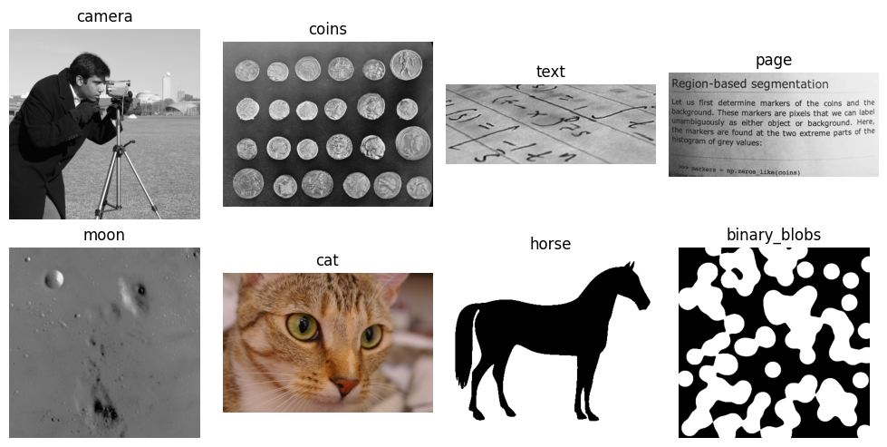
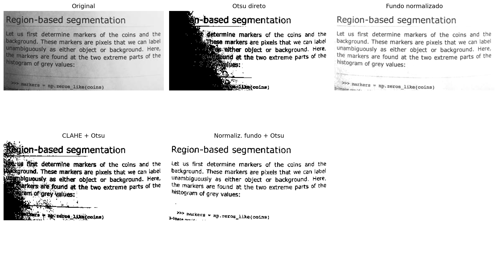
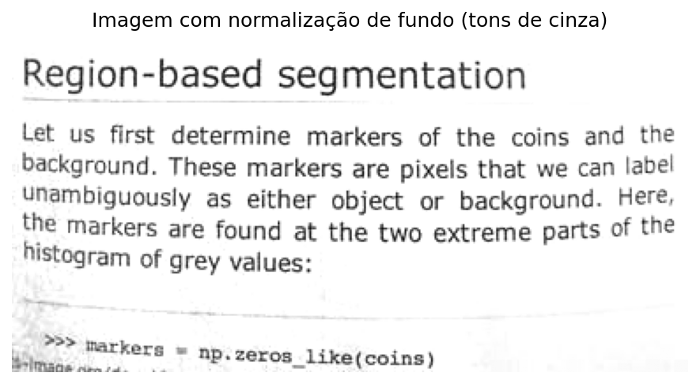
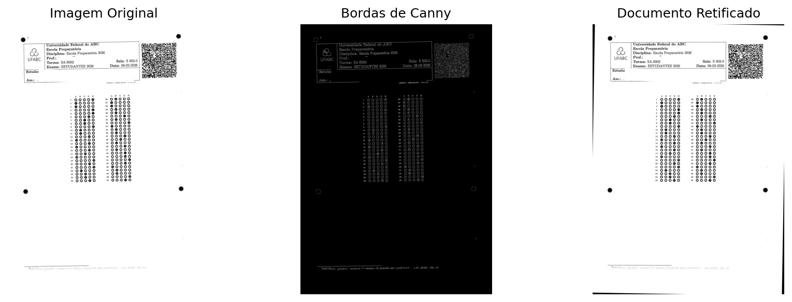
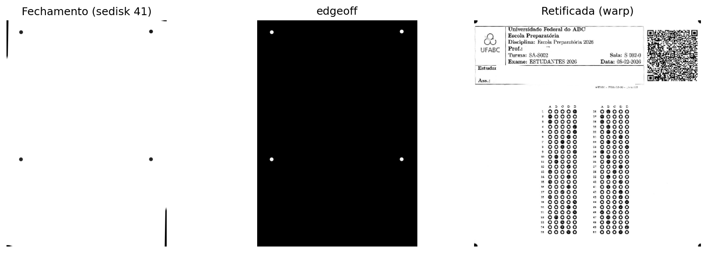
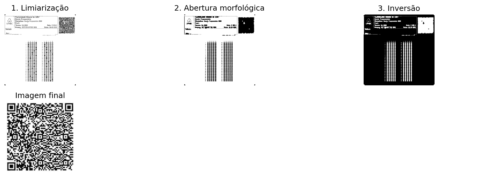
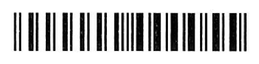
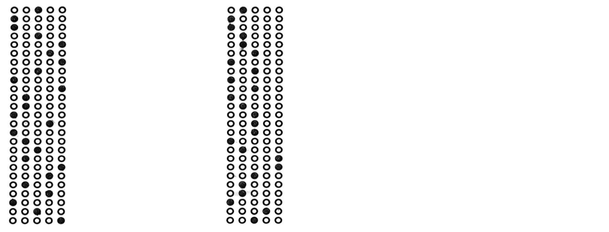
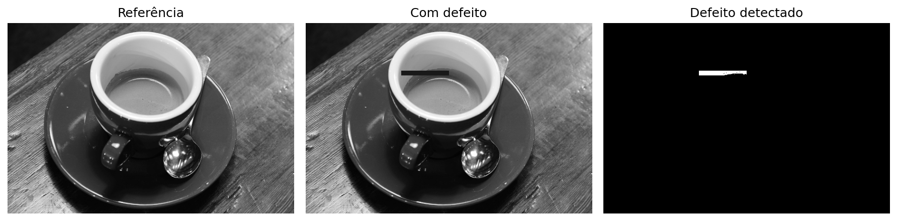
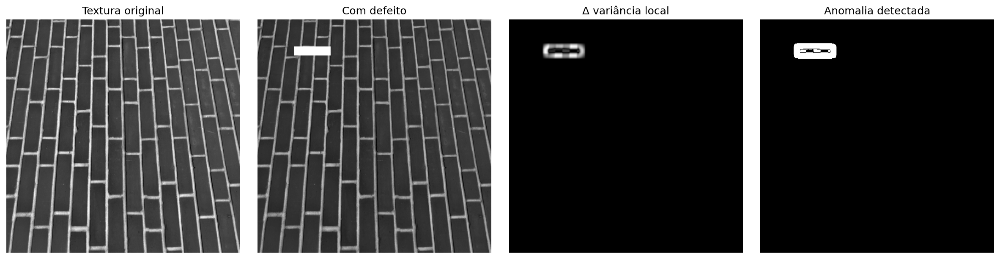

Na Parte I — Processamento Digital de Imagens (PDI), foram estudadas técnicas para transformação e aprimoramento de imagens, como operações morfológicas, filtragem espacial, convoluções, limiarização, segmentação e processamento no domínio da frequência.
A Parte II — Visão Computacional (VC) amplia esse escopo ao tratar da interpretação automática do conteúdo visual, envolvendo a extração de informações, o reconhecimento de padrões e a tomada de decisões a partir de imagens.
Este capítulo apresenta essa transição por meio de duas aplicações representativas:
Análise Automatizada de Documentos, aplicada ao processamento de formulários, avaliações e outros documentos estruturados por meio de sistemas de reconhecimento óptico de marcas (Optical Mark Recognition – OMR);
Inspeção Industrial Automatizada, voltada ao controle de qualidade e à detecção de defeitos em linhas de produção.
Essas aplicações integram técnicas de detecção de estruturas geométricas, extração de descritores invariantes, reconhecimento de padrões e classificação de objetos, constituindo a base de diversos sistemas modernos de inspeção visual e automação.
6.1 Objetivos do Capítulo
Ao final deste capítulo, o estudante deverá ser capaz de:
Avaliar a influência do pré-processamento na qualidade do reconhecimento automático de informações em documentos;
Realizar reconhecimento óptico de caracteres (OCR) para converter documentos digitalizados em texto codificado;
Aplicar técnicas de processamento de linguagem natural, incluindo tradução automática, ao texto obtido por OCR;
Aplicar técnicas de alinhamento e retificação geométrica de documentos utilizando a Transformada de Hough e transformações projetivas;
Implementar sistemas de reconhecimento óptico de marcas (OMR) para leitura automatizada de avaliações e formulários;
Detectar e segmentar regiões de interesse com base em operações morfológicas, contornos e propriedades geométricas;
Decodificar marcadores bidimensionais e códigos de barras, integrando bibliotecas de Visão Computacional a pipelines de processamento documental;
Desenvolver pipelines de Visão Computacional para análise automatizada de documentos.
Este capítulo marca a transição do Processamento Digital de Imagens, voltado à transformação de imagens, para a Visão Computacional, cujo objetivo é interpretar o conteúdo visual, extrair informações e apoiar processos automatizados de análise e tomada de decisão.
6.2 Configuração do Ambiente
Os exemplos deste capítulo utilizam bibliotecas amplamente empregadas em PDI-VC. O bloco abaixo instala os pacotes necessários; em ambientes que já os possuam, a execução pode ser ignorada.
import os, urllib.requesturl ="https://raw.githubusercontent.com/fzampirolli/pdi-vc/master/morph/config.py"ifnot os.path.exists("config.py"): urllib.request.urlretrieve(url, "config.py")import configconfig.setup()from morph import mm# instalar mais dependências além do morph.py para este capítuloimport sys, subprocess, importlib, shutildef setup_cap06():"""Instala dependências de sistema e Python específicas do Capítulo 6 (OCR, leitura de PDF, código de barras)."""# 1. Dependências de sistemaif'google.colab'in sys.modules:print("[AMBIENTE] Google Colab. Configurando dependências do sistema...") subprocess.run("apt-get update && apt-get install -y poppler-utils ""libzbar0 tesseract-ocr tesseract-ocr-por", shell=True, stdout=subprocess.DEVNULL, stderr=subprocess.DEVNULL )elif shutil.which("tesseract") isNone:# Ambiente local sem tesseract: tenta instalar via apt-get (requer sudo/root)if shutil.which("apt-get"):print("[AMBIENTE] Local. Instalando tesseract-ocr via apt-get (pode pedir senha)...") resultado = subprocess.run("sudo apt-get update && sudo apt-get install -y tesseract-ocr tesseract-ocr-por", shell=True )if resultado.returncode !=0or shutil.which("tesseract") isNone:print("[AVISO] Não foi possível instalar automaticamente. ""Instale manualmente: sudo apt install tesseract-ocr tesseract-ocr-por" )else:print("[AVISO] tesseract não encontrado e apt-get indisponível. ""Instale manualmente antes de executar as células de OCR." )# 2. Dependências do Python (instala apenas as ausentes) pkgs = {"cv2": "opencv-python", "skimage": "scikit-image", "numpy": "numpy","pdf2image": "pdf2image", "pandas": "pandas", "tabulate": "tabulate","PyPDF2": "PyPDF2", "bcrypt": "bcrypt", "pyarrow": "pyarrow","pyzbar": "pyzbar", "pytesseract": "pytesseract", "deep_translator": "deep-translator" }for mod, pkg in pkgs.items():if importlib.util.find_spec(mod) isNone: resultado_pip = subprocess.run([sys.executable, "-m", "pip", "install", "-q", pkg])if resultado_pip.returncode !=0:print(f"[AVISO] Falha ao instalar {pkg} (necessário para o módulo {mod}).")setup_cap06()# 3. Imports globais do pipelineimport cv2, numpy as np, matplotlib.pyplot as pltfrom skimage import io, data, color
✅ Ambiente pronto. Morph: 1.1.8 | OpenCV: 5.0.0
Além dessas bibliotecas, será utilizado o módulo didático morph.py, desenvolvido para simplificar operações de leitura, visualização e processamento de imagens ao longo deste livro. O código a seguir verifica sua disponibilidade, realiza o download quando necessário e confirma a versão carregada.
Os exemplos apresentados nesta parte do livro utilizam, sempre que possível, documentos digitalizados, folhas de respostas, códigos de barras, QRCodes e outras imagens provenientes de aplicações reais. Para tornar os experimentos integralmente reproduzíveis — inclusive em ambientes sem acesso à internet ou aos arquivos originais do MCTest —, também são empregadas imagens públicas amplamente utilizadas no ensino e na pesquisa em Processamento Digital de Imagens e Visão Computacional (PDI-VC).
DicaPor que utilizar um banco de imagens de benchmark?
Imagens como camera() e coins() são empregadas há décadas em livros-texto, artigos científicos e materiais didáticos de PDI-VC. Sua utilização oferece importantes vantagens:
Reprodutibilidade: qualquer leitor obtém exatamente as mesmas imagens, independentemente do computador ou sistema operacional utilizado, sem necessidade de downloads externos ou de arquivos específicos deste livro;
Comparabilidade: os resultados produzidos podem ser comparados diretamente com aqueles reportados na literatura, uma vez que os mesmos conjuntos de imagens são amplamente adotados como referência;
Foco nos algoritmos: por serem imagens compactas, bem documentadas e distribuídas sem restrições de uso para fins educacionais e científicos, permitem concentrar a atenção nas técnicas de processamento, reduzindo interferências relacionadas à aquisição ou ao gerenciamento dos dados.
6.3.1 Imagens Públicas com skimage.data
O módulo skimage.data disponibiliza uma coleção de imagens de referência amplamente utilizada em atividades de ensino, pesquisa e validação de algoritmos em PDI-VC. A inspeção do atributo data.__all__ mostra que a versão atual reúne 42 itens, incluindo fotografias naturais, documentos digitalizados, imagens médicas, microscopia, texturas, padrões sintéticos, modelos tridimensionais e sequências temporais. Convém observar que alguns desses itens correspondem a funções utilitárias, como data_dir() e download_all(), e não a imagens propriamente ditas.
Como o objetivo deste capítulo é apresentar aplicações de análise documental e inspeção visual, a Tabela 6.2 reúne uma seleção representativa das imagens mais relevantes, organizada de acordo com suas principais aplicações em Visão Computacional. A Figura 6.1 apresenta uma amostra dessas imagens, agrupadas conforme a mesma classificação adotada na tabela.
NotaImagens utilizadas neste capítulo
Embora o skimage.data disponibilize dezenas de imagens de referência, apenas quatro são empregadas diretamente nos experimentos deste capítulo. Elas foram selecionadas por reproduzirem, de forma controlada, características frequentemente encontradas em documentos digitalizados e em sistemas de inspeção visual industrial. A Tabela 6.1 resume o papel de cada uma delas ao longo deste capítulo.
Tabela 6.1: Imagens do skimage.data utilizadas nos experimentos deste capítulo.
Imagem
Aplicação no capítulo
data.page()
Página digitalizada utilizada nos experimentos de correção de iluminação, realce local (CLAHE) e limiarização automática por Otsu.
data.text()
Documento contendo texto impresso, empregado para ilustrar segmentação, extração de contornos e etapas típicas de OCR e OMR.
data.coffee()
Fotografia colorida com variações naturais de iluminação, utilizada para exemplificar técnicas aplicáveis a cenas reais não documentais.
data.brick()
Textura de referência empregada em exemplos de inspeção superficial e detecção de defeitos por análise de variância local.
Tabela 6.2: Seleção de imagens públicas representativas disponíveis no módulo skimage.data, organizadas por área de aplicação.
Categoria
Função
Descrição
📄 Documentos & OCR/OMR
data.page()
Página digitalizada de documento — normalização de fundo, CLAHE e Otsu.
📄 Documentos & OCR/OMR
data.text()
Texto impresso — segmentação e extração de contornos em cenários de OCR/OMR.
🔵 Segmentação, Morfologia & Contornos
data.coins()
Conjunto de moedas — referência clássica para segmentação e watershed.
🔵 Segmentação, Morfologia & Contornos
data.clock()
Relógio analógico — detecção de formas e contornos.
🔵 Segmentação, Morfologia & Contornos
data.binary_blobs()
Blobs binários sintéticos — conectividade e morfologia matemática.
🔵 Segmentação, Morfologia & Contornos
data.moon()
Superfície lunar — segmentação de crateras por relevo de intensidade.
🧵 Textura & Inspeção Industrial
data.brick()
Textura uniforme de tijolos — detecção de defeitos por variância local.
🧵 Textura & Inspeção Industrial
data.checkerboard()
Padrão xadrez — calibração de câmera e transformações geométricas.
🖼️ Fotografias Clássicas de PDI/VC
data.camera()
Fotógrafo com tripé — imagem de referência mais citada na literatura de PDI.
🖼️ Fotografias Clássicas de PDI/VC
data.astronaut()
Retrato colorido de astronauta — filtragem e realce em cor.
🖼️ Fotografias Clássicas de PDI/VC
data.coffee()
Xícara de café — cena real com variação de iluminação e cor.
🖼️ Fotografias Clássicas de PDI/VC
data.cat() / data.chelsea()
Fotografias coloridas de gatos — detecção de bordas e realce.
🖼️ Fotografias Clássicas de PDI/VC
data.horse()
Silhueta binária de cavalo — descritores de forma e contorno.
import matplotlib.pyplot as pltfrom skimage import data# Imagens ordenadas por categoria; a cor do título reproduz a cor da categoria na tab. anteriorimgs = [ ("page", data.page(), "#2563eb"), # Documentos & OCR/OMR ("text", data.text(), "#2563eb"), ("coins", data.coins(), "#16a34a"), # Segmentação & morfologia ("binary_blobs", data.binary_blobs(), "#16a34a"), ("brick", data.brick(), "#ea580c"), # Textura & inspeção industrial ("checkerboard", data.checkerboard(),"#ea580c"), ("camera", data.camera(), "#7c3aed"), # Fotografias clássicas de PDI/VC ("coffee", data.coffee(), "#7c3aed"),]fig, ax = plt.subplots(2, 4, figsize=(11, 5.5))for a, (nome, img, cor) inzip(ax.ravel(), imgs): a.imshow(img, cmap="gray") a.set_title(nome, color=cor, fontweight="bold") a.axis("off")plt.tight_layout()

Figura 6.1: Amostra de imagens públicas do skimage.data, agrupadas por área de aplicação.
6.4 Normalização de Fundo e Equalização Local de Contraste
A qualidade da segmentação depende diretamente das características da imagem de entrada. Em documentos digitalizados, variações de iluminação, sombras, regiões superexpostas e diferenças de tonalidade do papel reduzem o contraste entre o primeiro plano e o fundo, dificultando a aplicação de métodos de limiarização global, como o algoritmo de Otsu.
Para minimizar esses efeitos, são empregadas duas técnicas complementares de pré-processamento:
Normalização de fundo: estima a componente de baixa frequência da imagem por meio de uma forte suavização e, em seguida, normaliza a imagem original em relação a esse fundo estimado. Esse procedimento reduz gradientes de iluminação e compensa variações lentas de intensidade, preservando as estruturas de interesse.
CLAHE (Contrast Limited Adaptive Histogram Equalization), apresentado no Capítulo 4: divide a imagem em pequenas regiões (tiles) e realiza a equalização do histograma de cada região de forma independente. O contraste é limitado para evitar a amplificação excessiva do ruído, tornando a técnica especialmente adequada para imagens com variações locais de iluminação.
A Figura 6.2 compara essas estratégias utilizando a imagem page() da biblioteca skimage.data. São apresentados seis resultados: (a) a imagem original; (b) a binarização direta pelo método de Otsu, utilizada como referência; (c) o fundo estimado por filtragem Gaussiana; (d) a imagem após a normalização de fundo; (e) a binarização obtida após a aplicação do CLAHE seguida do método de Otsu; e (f) a binarização obtida após a normalização de fundo seguida da aplicação do método de Otsu.
A comparação permite observar o efeito produzido por cada etapa do pré-processamento e sua influência na qualidade da segmentação. Em particular, a normalização de fundo reduz as variações globais de iluminação, enquanto o CLAHE aumenta o contraste local entre caracteres e fundo. Dependendo das características da imagem, uma ou outra estratégia pode produzir resultados superiores, não existindo uma técnica universalmente mais adequada.
import cv2from skimage import datafrom morph import mmimg = data.page() # ou: img = mm.gray(img_final) — com imagem da folha de prova# ── Método 1: Normalização de fundo + Otsu ────────────────────────────────# Estima o fundo com um filtro Gaussiano de sigma grande (variações lentas de luz)# e divide pixel a pixel para cancelar o gradiente de iluminaçãobg = cv2.GaussianBlur(img, (0, 0), sigmaX=25)img_norm = cv2.divide(img, bg, scale=255)img_norm_otsu = mm.threshold(img_norm)# ── Método 2: CLAHE + Otsu ────────────────────────────────────────────────# tileGridSize define o tamanho de cada região local (tile)# clipLimit controla o teto de amplificação — valores altos aumentam contraste# mas também amplificam ruídoclahe = cv2.createCLAHE(clipLimit=2.0, tileGridSize=(8, 8))img_clahe = clahe.apply(img)img_clahe_otsu = mm.threshold(img_clahe)# ── Método 0: Otsu direto (sem pré-processamento) — referência ───────────img_otsu = mm.threshold(img)mm.show( [img, img_otsu, bg, img_norm, img_clahe_otsu, img_norm_otsu], titles=["(a) Original", "(b) Otsu direto", "(c) Gaussiano", \"(d) Fundo normalizado (img/bg)", "(e) CLAHE + Otsu", \"(f) Normaliz. fundo + Otsu"], cols=3, figsize=(14, 8))

Figura 6.2: Comparação entre estratégias de pré-processamento para binarização da imagem de texto: (a) imagem original; (b) limiarização direta pelo método de Otsu; (c) fundo estimado por filtragem Gaussiana; (d) imagem após normalização de fundo (divisão pela imagem suavizada); (e) CLAHE seguido de limiarização por Otsu; e (f) normalização de fundo seguida de limiarização por Otsu. As imagens ilustram o efeito de cada técnica na compensação de variações de iluminação e na qualidade da segmentação.
Nota🧠 Por que funciona? — Normalização de fundo vs. CLAHE
Normalização de fundo: ao dividir a imagem por uma versão fortemente suavizada de si mesma, eliminam-se as variações lentas de luminosidade (gradiente de luz, sombra de borda) sem afetar os detalhes finos — texto, linhas, bolhas. O resultado é uma imagem com iluminação aproximadamente uniforme, onde o limiar global de Otsu passa a funcionar bem em toda a página.
CLAHE: um histograma global equalizado “estica” os tons de toda a imagem de uma vez — útil quando a iluminação é uniforme, mas problemático quando não é. O CLAHE divide a imagem em pequenos blocos (tiles) e equaliza cada um separadamente, com um limite máximo de amplificação (clipLimit) para não explodir o ruído. É especialmente eficaz para realçar regiões subexpostas localmente, mas não elimina gradientes globais — por isso, aplicá-lo após a normalização de fundo tende a produzir resultados mais consistentes.
6.5 Reconhecimento Óptico de Caracteres (OCR)
Após a binarização, a etapa seguinte do processamento documental consiste na conversão da representação visual dos caracteres em texto codificado digitalmente, processo denominado Reconhecimento Óptico de Caracteres (Optical Character Recognition — OCR).
De forma geral, um sistema de OCR compreende três etapas:
Segmentação: identifica linhas, palavras e caracteres na imagem, utilizando projeções horizontais e verticais ou detecção de componentes conexos.
Extração de características: representa cada caractere por atributos visuais, como bordas, curvaturas e padrões de traço.
Reconhecimento: associa os atributos extraídos ao caractere mais provável. Sistemas atuais utilizam predominantemente redes neurais recorrentes (LSTM) ou arquiteturas baseadas em transformers.
Neste livro, utiliza-se o Tesseract OCR, acessado por meio da biblioteca pytesseract (instalação: pip install pytesseract). Desenvolvido originalmente pela Hewlett-Packard entre 1985 e 1995 e atualmente mantido pelo Google, o Tesseract é descrito em Smith (2007) e Smith (2013). Nas versões recentes, o reconhecimento textual é realizado por redes neurais LSTM.
O desempenho do OCR depende da qualidade da imagem de entrada. Ruído, baixo contraste, distorções geométricas e iluminação irregular reduzem a taxa de reconhecimento. Por esse motivo, etapas como retificação, normalização de fundo e equalização adaptativa (CLAHE) integram o pré-processamento da imagem.
Nota🧠 O Tesseract precisa de uma imagem binarizada?
O Tesseract incorpora internamente uma etapa de binarização adaptativa antes do reconhecimento dos caracteres. Por esse motivo, fornecer ao OCR uma imagem previamente binarizada nem sempre produz os melhores resultados.
Como a limiarização é uma operação irreversível, ela pode eliminar variações sutis de intensidade nas bordas dos caracteres, como o antialiasing, que podem auxiliar o mecanismo de reconhecimento. Em muitos casos, uma imagem em tons de cinza, com boa iluminação e contraste, produz uma transcrição mais fiel do que sua versão binarizada.
Para investigar esse efeito, compara-se o texto extraído pelo Tesseract a partir de quatro versões da mesma imagem, apresentadas na Figura 6.3: (a) imagem original; (b) imagem submetida à equalização adaptativa (CLAHE) seguida da limiarização pelo método de Otsu; (c) imagem submetida à normalização de fundo seguida da limiarização pelo método de Otsu; e (d) imagem submetida apenas à normalização de fundo, preservando os tons de cinza.
A comparação entre as versões (c) e (d) mostra que, em trechos contendo caracteres visualmente semelhantes, a versão em tons de cinza (d) produziu uma transcrição mais fiel ao texto original do que a versão binarizada (c). Esse resultado indica que a limiarização aplicada no pré-processamento pode eliminar informações úteis ao reconhecimento. Assim, embora a binarização seja essencial para diversas operações de processamento de imagens, ela não constitui necessariamente a melhor entrada para o OCR. A escolha da técnica de pré-processamento deve considerar a etapa subsequente do pipeline documental.
import pytesseractimport shutil as _shif _sh.which("tesseract") isNone:# Ambiente de build sem o Tesseract instalado (ex.: sem apt/sudo):# degrada em vez de quebrar o render. No Colab/local com Tesseract,# nada muda. _AVISO_OCR ="[Tesseract OCR indisponivel neste ambiente - texto omitido]" pytesseract.image_to_string =lambda*a, **k: _AVISO_OCRfrom skimage import dataimport cv2from morph import mmimg = data.page()# ── Reaproveitando os resultados da seção anterior ────────────────────────img_otsu = mm.threshold(img)bg = cv2.GaussianBlur(img, (0, 0), sigmaX=25)img_norm = cv2.divide(img, bg, scale=255) # tons de cinza, sem Otsuimg_norm_otsu = mm.threshold(img_norm) # binarizadaclahe = cv2.createCLAHE(clipLimit=2.0, tileGridSize=(8, 8))img_clahe = clahe.apply(img)img_clahe_otsu = mm.threshold(img_clahe)# ── Configuração do Tesseract ──────────────────────────────────────────────# --psm 6: assume um único bloco uniforme de texto (adequado à imagem `page`)config ="--psm 6"texto_original = pytesseract.image_to_string(img, config=config)texto_clahe_otsu = pytesseract.image_to_string(img_clahe_otsu, config=config)texto_norm_otsu = pytesseract.image_to_string(img_norm_otsu, config=config)texto_norm_gray = pytesseract.image_to_string(img_norm, config=config)for nome, texto inzip( ["(a) Original", "(b) CLAHE + Otsu", "(c) Normaliz. fundo + Otsu", "(d) Normaliz. fundo (tons de cinza)"], [texto_original, texto_clahe_otsu, texto_norm_otsu, texto_norm_gray]):print(f"--- {nome} ---")print(texto.strip(), "\n")mm.show( [img, img_clahe_otsu, img_norm_otsu, img_norm], titles=["(a) Original", "(b) CLAHE + Otsu", "(c) Normaliz. fundo + Otsu", "(d) Normaliz. fundo (cinza)"], cols=4, figsize=(16, 4))
Figura 6.3
Nota🧠 Por que o pré-processamento melhora o OCR?
O desempenho do OCR depende diretamente da qualidade da imagem de entrada. Baixo contraste, iluminação não uniforme, ruído e distorções geométricas dificultam a separação entre texto e fundo e aumentam a probabilidade de erros de reconhecimento.
Técnicas como a normalização de fundo e a equalização adaptativa (CLAHE) corrigem gradientes de iluminação e realçam o contraste local entre os caracteres e o fundo, produzindo imagens mais adequadas ao reconhecimento automático. A limiarização, por sua vez, deve ser aplicada com cautela: por tratar-se de uma operação irreversível, pode eliminar variações sutis de intensidade nas bordas dos caracteres — como o antialiasing — que o próprio motor de OCR utiliza internamente para resolver ambiguidades entre símbolos visualmente semelhantes. Por esse motivo, imagens em tons de cinza, corrigidas apenas quanto à iluminação, frequentemente produzem transcrições mais fiéis do que suas versões binarizadas.
Em documentos capturados por câmeras de dispositivos móveis, o pré-processamento tende a proporcionar maior ganho de desempenho do que em documentos digitalizados por scanner, nos quais a iluminação costuma ser mais uniforme.
6.6 Tradução Automática do Texto Reconhecido
Após o reconhecimento óptico de caracteres, o texto obtido pode ser submetido a técnicas de processamento de linguagem natural, como correção ortográfica, indexação, sumarização e tradução automática.
A tradução automática constitui uma etapa independente do OCR. Enquanto o OCR converte os caracteres presentes na imagem em texto codificado, a tradução opera sobre esse texto no idioma original do documento. Dessa forma, erros de reconhecimento podem ser propagados para a tradução, comprometendo a qualidade do resultado. Sistemas atuais de tradução automática utilizam predominantemente arquiteturas neurais baseadas em mecanismos de atenção e transformers(Bahdanau; Cho; Bengio, 2015; Vaswani et al., 2017).
Neste exemplo, utiliza-se o texto obtido a partir da imagem submetida apenas à normalização de fundo, sem limiarização (item d da Figura 6.3), por apresentar a transcrição mais fiel entre as estratégias avaliadas na seção anterior.
A tradução é realizada por meio da biblioteca deep-translator (instalação: pip install deep-translator), que fornece uma interface para diferentes serviços de tradução automática, incluindo o Google Translate.
from deep_translator import GoogleTranslatorimport shutil as _sh# Texto obtido pelo OCR a partir da imagem com normalização de fundo (tons de cinza)texto_en = texto_norm_grayif _sh.which("tesseract") isNone:# Ambiente de build sem o Tesseract instalado (ver célula anterior): texto_en# já é o placeholder de OCR indisponível, não texto real — pular a tradução# em vez de falhar ao tentar traduzir uma string que não é inglês de verdade. texto_pt ="[Tradução indisponível neste ambiente - Tesseract OCR ausente]"else: texto_pt = GoogleTranslator(source="en", target="pt").translate(texto_en)print("--- Texto original gerado pela imagem normalizada em tons de cinza (OCR, EN) ---")print(texto_en)print("\n--- Texto traduzido (PT-BR) ---")print(texto_pt)mm.show( [img_norm], titles=["Imagem com normalização de fundo (tons de cinza)"], cols=1, figsize=(6, 4))
--- Texto original gerado pela imagem normalizada em tons de cinza (OCR, EN) ---
Region-based segmentation
Let us first determine markers of the coins and the
background. These markers are pixels that we can label
unambiguously as either object or background. Here,
the markers are found at the two extreme parts of the
histogram of grey values:
4 2? Barkers = np. zeros_like(coins)
--- Texto traduzido (PT-BR) ---
Segmentação baseada em região
Vamos primeiro determinar os marcadores das moedas e o
fundo. Esses marcadores são pixels que podemos rotular
inequivocamente como objeto ou plano de fundo. Aqui,
os marcadores são encontrados nas duas partes extremas do
histograma de valores de cinza:
4 2? Ladradores = np. zeros_like(moedas)

Figura 6.4: Fluxo de reconhecimento e tradução automática. A imagem pré-processada por normalização de fundo, sem limiarização, é utilizada como entrada para o Tesseract OCR, e o texto reconhecido é traduzido do inglês para o português por meio da biblioteca deep-translator.
Nota🧠 Por que a qualidade do OCR influencia a tradução?
A tradução automática utiliza como entrada o texto produzido pelo OCR. Erros de reconhecimento, como caracteres incorretos, palavras incompletas ou fragmentadas, são propagados para a etapa de tradução e podem alterar o significado do texto.
Consequentemente, a qualidade da tradução depende diretamente da fidelidade da transcrição obtida pelo OCR. Como discutido anteriormente, essa fidelidade nem sempre é maximizada por uma binarização externa: imagens em tons de cinza, corrigidas apenas quanto à iluminação, podem preservar informações relevantes para a distinção entre caracteres visualmente semelhantes. Assim, o pré-processamento da imagem — e a escolha adequada de suas etapas em função da tarefa subsequente — contribui para melhorar não apenas o reconhecimento dos caracteres, mas também o desempenho de etapas posteriores de processamento de linguagem natural, como tradução, indexação e sumarização.
6.7 Fundamentos de OMR e Inspeção Industrial
O Reconhecimento Óptico de Marcas (Optical Mark Recognition — OMR) é uma técnica de Visão Computacional destinada à identificação automática de marcações em posições previamente definidas de um formulário. Suas aplicações incluem folhas de respostas, questionários, formulários administrativos e outros documentos estruturados.
Diferentemente do OCR (Optical Character Recognition), que reconhece caracteres e palavras, o OMR determina a presença, a ausência ou a intensidade de marcas em regiões previamente conhecidas. Em vez de interpretar texto, explora propriedades geométricas e estatísticas associadas ao preenchimento dessas regiões.
Os sistemas modernos de OMR processam imagens obtidas por scanners, câmeras ou dispositivos móveis, automatizando tarefas que anteriormente dependiam de equipamentos especializados.
De forma geral, um sistema de OMR compreende as seguintes etapas:
Aquisição: conversão do documento físico em formato digital;
Pré-processamento: correção geométrica, redução de ruídos e binarização;
Localização das regiões de interesse: identificação das áreas destinadas às marcações;
Análise das marcações: avaliação do preenchimento das regiões candidatas;
Interpretação: conversão das marcações em respostas ou dados estruturados.
Esses princípios se estendem naturalmente à Inspeção Industrial Automatizada. Em linhas de produção, o mesmo encadeamento — aquisição, pré-processamento, segmentação, extração de características e decisão — é empregado para detectar defeitos superficiais, verificar a integridade de componentes e medir dimensões com precisão subpixel. A diferença reside no domínio de aplicação: enquanto o OMR opera sobre documentos com estrutura predefinida, a inspeção industrial lida com objetos cujas variações geométricas e radiométricas devem ser modeladas de forma mais flexível.
Nas seções seguintes, ambas as aplicações são desenvolvidas por meio de projetos práticos que reproduzem etapas típicas de sistemas reais.
6.8 Projetos Práticos: Construção de um Pipeline de Análise Documental
Os conceitos deste capítulo serão desenvolvidos por meio de projetos que reproduzem etapas típicas de sistemas reais de análise documental, introduzindo técnicas reutilizáveis em aplicações de OCR, OMR, inspeção visual e processamento de formulários.
6.8.1 Alinhamento Automático de Documentos (OCR/OMR Pre-processing)
A correção de inclinação (deskew) é uma etapa fundamental no processamento de documentos. Rotações introduzidas durante a digitalização ou captura comprometem a localização de regiões de interesse e reduzem a precisão das etapas subsequentes.
Neste projeto será desenvolvido um sistema para estimar automaticamente a orientação predominante do documento e corrigir sua inclinação. Para isso, serão empregadas técnicas clássicas de detecção de bordas com o operador de Canny e detecção de retas pela Transformada de Hough. A partir das linhas identificadas, será estimado o ângulo de rotação e aplicada uma transformação afim para produzir uma versão alinhada do documento.
Como formulários e folhas de resposta são frequentemente distribuídos em formato PDF, o pipeline inicia-se com a rasterização de cada página, convertendo-a em uma imagem matricial. Neste capítulo, essa etapa será realizada com a biblioteca pdf2image, gerando imagens PNG com resolução de 300 DPI (dots per inch). A partir delas, poderão ser aplicadas as técnicas de detecção de bordas, Transformada de Hough, segmentação, extração de contornos e reconhecimento automático de padrões estudadas ao longo do capítulo.
import osimport urllib.requestfrom pdf2image import convert_from_pathfrom skimage import dataimport cv2# Diretório dos microdados e folhas de respostas do exame institucionalfile_path ="dados/provas_qrcode_EP.pdf"url_github = ("https://raw.githubusercontent.com/fzampirolli/""pdi-vc/master/all/cap06/dados/provas_qrcode_EP.pdf")# Se o arquivo não existir localmente, baixa automaticamente do GitHubifnot os.path.exists(file_path):print(f"[DOWNLOAD] Baixando PDF do GitHub: {url_github}")try:# Garante que a pasta 'dados' existe antes de salvar os.makedirs(os.path.dirname(file_path), exist_ok=True) urllib.request.urlretrieve(url_github, file_path)print("[DOWNLOAD] PDF baixado com sucesso!")exceptExceptionas e:print(f"[DOWNLOAD] Falha ao baixar o arquivo: {e}")print(f"PDF de folhas de prova digitalizadas: {file_path}")if os.path.exists(file_path):# Rasterização das páginas com resolução otimizada de 300 DPI pages = convert_from_path(file_path, dpi=300)for i, page inenumerate(pages): saida =f"test{i+1:02d}.png" page.save(saida)print(f"[INGESTÃO] Página PDF convertida com sucesso: {saida}")else:print("[AVISO] Arquivo PDF não localizado no path. Ativando fallback via skimage.data.")# Injeta matriz de texto pública para garantir a execução contínua do pipeline img_fallback = data.text() cv2.imwrite("test02.png", img_fallback)print("[INGESTÃO] Imagem de fallback estruturada: test02.png")# Carrega e exibe a imagem rasterizada inicial utilizando o ecossistema morphif os.path.exists('test02.png'): img_original = mm.read('test02.png')else:# Fallback definitivo caso até o skimage falhe img_original = np.ones((400, 400), dtype=np.uint8) *255mm.show(img_original, figsize=(4, 3))
PDF de folhas de prova digitalizadas: dados/provas_qrcode_EP.pdf
[INGESTÃO] Página PDF convertida com sucesso: test01.png
[INGESTÃO] Página PDF convertida com sucesso: test02.png
[INGESTÃO] Página PDF convertida com sucesso: test03.png
Figura 6.5: Pipeline de ingestão de documentos: rasterização adaptativa de páginas PDF para matrizes discretas em formato PNG, exibindo a página dois.
6.8.2 Algoritmo de Retificação de Inclinação (Deskew)
A etapa de deskew tem como objetivo estimar e corrigir a inclinação global de um documento digitalizado, alinhando seu conteúdo aos eixos da imagem. A Figura 6.7 apresenta o fluxo completo de processamento, desde a imagem original até o resultado após a correção geométrica. Complementarmente, o simulador da Figura 6.6 permite visualizar o funcionamento da Transformada de Hough e compreender como a orientação predominante é estimada.
O procedimento é composto por três etapas principais:
detecção de bordas pelo operador de Canny;
estimação da orientação predominante por meio da Transformada de Hough Linear;
correção da inclinação utilizando uma transformação afim de rotação.
Após a retificação, o documento passa a apresentar orientação aproximadamente horizontal, favorecendo as etapas subsequentes de segmentação, rotulagem de componentes conexos e reconhecimento de caracteres e marcas.
6.8.3 Modelagem Matemática
As subseções seguintes formalizam, em termos matemáticos, as etapas descritas anteriormente, relacionando o gradiente da imagem, a parametrização de retas no espaço de Hough e a matriz de rotação empregada na correção geométrica.
6.8.3.1 Detecção de Bordas
Inicialmente, a imagem é suavizada por um filtro Gaussiano, reduzindo o efeito de ruídos de alta frequência que podem gerar bordas espúrias. Os conceitos de filtragem espacial e convolução foram apresentados no Capítulo 3.
Em seguida, o operador de Canny estima o gradiente da imagem. Seja \(f(x,y)\) a intensidade da imagem e \(\alpha\) o ângulo de rotação.
\(f(x,y)\) representa a intensidade da imagem na posição \((x,y)\);
\(\frac{\partial f}{\partial x}\) e \(\frac{\partial f}{\partial y}\) são as derivadas parciais nas direções horizontal e vertical;
\(|\nabla f(x,y)|\) é a magnitude do gradiente.
Após o cálculo do gradiente, o algoritmo aplica a supressão de não máximos (non-maximum suppression) e a limiarização por histerese, produzindo uma imagem binária contendo as principais bordas do documento.
6.8.3.2 Transformada de Hough
A imagem binária de bordas é processada pela Transformada de Hough Linear, cujo objetivo é detectar estruturas aproximadamente retilíneas. Em vez da representação cartesiana da reta, \(y=ax+b\), utiliza-se a representação na forma normal,
\[
\rho = x\cos\theta + y\sin\theta,
\]
em que:
\(x\) e \(y\) são as coordenadas de um ponto pertencente à reta;
\(\rho\) é a distância perpendicular entre a reta e a origem do sistema de coordenadas da imagem;
\(\theta\) é o ângulo formado entre a normal à reta e o eixo horizontal da imagem.
Nessa representação, cada ponto de borda \((x,y)\) gera uma curva no espaço de parâmetros \((\rho,\theta)\). A interseção das curvas produzidas por pontos pertencentes à mesma reta origina máximos em uma matriz bidimensional denominada acumulador. Assim, os picos do acumulador correspondem às retas predominantes da imagem, como bordas do documento, linhas de formulários ou linhas de texto.
Para estimar a inclinação global do documento, consideram-se apenas as retas cujos ângulos satisfazem
\[
-45^\circ \leq \theta \leq 45^\circ.
\]
Essa restrição elimina orientações incompatíveis com a disposição esperada do documento e reduz a influência de retas verticais ou de estruturas irrelevantes. Seja \(\theta_1,\theta_2,\ldots,\theta_n\) o conjunto dos ângulos das retas selecionadas. A estimativa da inclinação global é obtida pela mediana,
\(\theta_i\) é o ângulo da \(i\)-ésima reta detectada pela Transformada de Hough;
\(n\) é o número de retas consideradas após a filtragem angular;
\(\hat{\theta}\) é a estimativa da inclinação global do documento.
A mediana é adotada por ser menos sensível à presença de detecções isoladas (outliers) do que a média aritmética, produzindo uma estimativa mais estável da orientação predominante.
6.8.3.3 Rotação Afim
Seja \(\hat{\theta}\) a inclinação estimada na etapa anterior. A correção geométrica consiste em aplicar uma transformação afim de rotação em torno do centro da imagem, de modo que a orientação predominante passe a coincidir com o eixo horizontal. As transformações afins foram estudadas no Capítulo 2, juntamente com as operações de translação, escala, cisalhamento e rotação.
Seja \((x,y)\) a posição de um pixel em relação ao centro da imagem e \((x',y')\) sua posição após a rotação. A transformação é descrita por \[
\begin{bmatrix}
x'\\
y'
\end{bmatrix} =
R(\alpha)
\begin{bmatrix}
x\\
y
\end{bmatrix},
\]
\((x,y)\) as coordenadas originais do pixel em relação ao centro da imagem;
\((x',y')\) as coordenadas do pixel após a rotação;
\(\alpha\) o ângulo de rotação aplicado para compensar a inclinação estimada do documento;
\(R(\alpha)\) a matriz de rotação.
Na prática, o ângulo aplicado corresponde ao oposto da inclinação estimada,
\[
\alpha = -\hat{\theta},
\]
em que \(\hat{\theta}\) representa a orientação predominante obtida pela Transformada de Hough.
Como as coordenadas transformadas nem sempre coincidem com posições inteiras da malha de pixels, é necessário reamostrar a imagem para determinar os novos valores de intensidade. Na implementação apresentada neste capítulo, a função mm.rotate realiza essa operação utilizando interpolação bicúbica, reduzindo os artefatos de reamostramento e preservando a continuidade visual de bordas e caracteres.
🔄 Simulador: Correção de Inclinação (Deskew)Canny → Hough → Rotação
Ângulo Real
0.0°
Estimado (Hough)
0.0°
Erro Residual
0.0°
📄 Original Inclinado
🔍 Bordas Canny
✅ Corrigido (Deskewed)
🧠 Pipeline de Processamento
1
Canny: Detecta bordas dos segmentos de texto — pixels de alto gradiente que formam os contornos das linhas.
2
Hough: Cada pixel de borda vota nas retas associadas. A mediana dos ângulos das retas com mais votos estima a inclinação global.
3
Rotação Inversa: Aplica transformação afim com o ângulo oposto estimado, reorientando o documento à horizontal.
–
Figura 6.6: Simulador interativo de correção de inclinação (deskew): mova o slider para inclinar o documento e observe as três etapas do pipeline — imagem inclinada, bordas Canny e resultado corrigido.
def retificar_inclinacao_documento(img): gray = mm.gray(img) if img.ndim ==3else img edges = cv2.Canny(cv2.GaussianBlur(gray, (5,5), 0), 50, 150) lines = cv2.HoughLines(edges, 1, np.pi/180, 200)if lines isNone:return edges, img angulos = []for line in lines: angulo = np.rad2deg(line[0][1]) -90if-45< angulo <45: angulos.append(angulo)ifnot angulos:return edges, imgreturn edges, mm.rotate(img, np.median(angulos), interp="bicubic")# Execução do pipeline de deskewimg_edges, img_final = retificar_inclinacao_documento(img_original)# Exibição múltipla padronizada com o formato nativo do livromm.show( [img_original, img_edges, img_final], titles=["Imagem Original", "Bordas de Canny", "Documento Retificado"], cols=3, figsize=(12, 4))

Figura 6.7: Pipeline de retificação axial: exibição comparativa entre a entrada rotacionada original, o mapa de gradientes estruturais de Canny e o resultado final alinhado com fundo normalizado em branco.
Nota🧠 Por que funciona? — Transformada de Hough
Na Transformada de Hough, cada pixel de borda contribui com votos para todas as retas que podem passar por sua posição. Em vez de selecionar apenas a reta com maior número de votos, o algoritmo considera todas as retas cuja quantidade de votos excede um limiar mínimo e calcula seus respectivos ângulos. A inclinação global do documento é então estimada pela mediana desses ângulos, uma medida robusta a valores discrepantes. Assim, retas espúrias produzidas por sombras, ruídos ou outros elementos da imagem exercem pouca influência sobre a estimativa final, desde que a maioria das retas detectadas corresponda às bordas do documento.
6.8.4 Limitações Práticas
Embora apresente bom desempenho em condições usuais de digitalização, o método depende da existência de estruturas lineares suficientemente definidas para serem detectadas pela Transformada de Hough, como bordas da página, linhas de formulários ou linhas de texto. Sua precisão pode ser reduzida em imagens com baixa resolução, ruído excessivo, sombras intensas ou grandes inclinações. Em geral, documentos digitalizados com resolução próxima de 300 DPI e iluminação homogênea fornecem resultados adequados para aplicações de OCR e OMR.
A implementação apresentada neste capítulo possui finalidade didática, ilustrando os princípios da correção automática de inclinação por meio da detecção de bordas, da Transformada de Hough e da rotação afim. Por utilizar apenas a orientação das estruturas lineares predominantes, o método pode ser aplicado a diferentes tipos de documentos, sem depender de marcadores específicos.
Em sistemas reais de análise documental, entretanto, o alinhamento normalmente utiliza marcadores geométricos previamente conhecidos. No modelo de folha de respostas empregado pelo ecossistema MCTest, por exemplo, são utilizados quatro discos pretos de referência, além das regiões correspondentes ao cabeçalho, ao QRCode e aos quadros de respostas. A localização desses elementos permite estimar simultaneamente a rotação, a escala e a translação da folha, tornando o registro menos sensível à quantidade de texto, à ausência de linhas estruturais e às variações de impressão ou digitalização.
Por esse motivo, a abordagem baseada na Transformada de Hough é utilizada neste capítulo para introduzir os fundamentos do problema, enquanto as etapas posteriores adotam o alinhamento por marcadores geométricos, estratégia predominante em sistemas de OMR e análise documental.
6.8.5 Detecção de Bordas e Contornos
A localização precisa das regiões de interesse é uma etapa essencial em sistemas de OMR. No modelo de folha de respostas utilizado neste capítulo, o cabeçalho e o quadro de respostas estão contidos em um retângulo virtual delimitado por quatro discos pretos posicionados nos cantos. A identificação desses marcadores permite localizar a região de interesse e corrigir distorções geométricas introduzidas durante a aquisição da imagem.
O procedimento é composto por cinco etapas. Inicialmente, aplica-se um fechamento morfológico (dilatação seguida de erosão), operação estudada no Capítulo 4, utilizando um elemento estruturante em disco (mm.sedisk(33)). Essa operação reduz pequenas descontinuidades e preserva os discos de referência, tornando-os mais homogêneos. Em seguida, a imagem é invertida (mm.neg), de modo que os discos passem a constituir componentes claros sobre fundo escuro.
Na etapa seguinte, aplica-se a operação mm.edgeoff (Capítulo 4), que remove componentes conectados às bordas da imagem, eliminando artefatos como sombras de digitalização, marcas de corte e outros objetos espúrios nas margens. Os componentes remanescentes são então analisados a partir de seus contornos e filtrados por propriedades geométricas, como área e circularidade, para identificar os discos candidatos. A implementação do MCTest torna esse processo mais robusto ao selecionar, entre todos os candidatos, os quatro cujos centros formam um retângulo com largura compatível com a da imagem, reduzindo a ocorrência de falsos positivos.
Por fim, os centros dos quatro discos são ordenados espacialmente (superior esquerdo, superior direito, inferior esquerdo e inferior direito) e utilizados como pontos de controle em uma transformação de perspectiva (perspective warp). Essa transformação retifica a imagem, produzindo uma representação alinhada e com dimensões conhecidas, adequada às etapas subsequentes de segmentação e reconhecimento.
As principais etapas desse pipeline, desde o processamento morfológico até a imagem retificada, são ilustradas a seguir.
import cv2import numpy as npfrom morph import mm# img: imagem em escala de cinza da folha de provaif img_final.ndim ==2: img = img_finalelse: img = mm.gray(img_final)# 1. Fechamento morfológico: preserva os discos escuros, removendo tudo menor que o discoimg_close = mm.close(img, mm.sedisk(41))# 2. Inversão: discos escuros tornam-se componentes claros sobre fundo escuroimg_neg = mm.neg(img_close)# 3. Remove componentes conectados que tocam a borda da imagemimg_edgeoff = mm.edgeoff(img_neg)# 4. Extração dos contornos externoscontornos, _ = cv2.findContours(img_edgeoff, cv2.RETR_EXTERNAL, cv2.CHAIN_APPROX_SIMPLE)# 5. Filtragem por área e circularidade, mantendo apenas os 4 discoscentros = []for c in contornos: area = cv2.contourArea(c) perimetro = cv2.arcLength(c, True)if area <50or perimetro ==0:continue circularidade =4* np.pi * area / (perimetro **2)if circularidade >0.8: M = cv2.moments(c) cx, cy = M["m10"] / M["m00"], M["m01"] / M["m00"] centros.append((cx, cy))# Verificação robusta: interrompe o pipeline com mensagem clara em vez de AssertionErroriflen(centros) !=4:print(f"[AVISO] Esperado 4 discos marcadores, encontrado {len(centros)}.")print(" Verifique se a imagem é uma folha de respostas MCTest válida")print(" ou ajuste os parâmetros de circularidade e área mínima.") img_retificada = img # fallback: preserva a imagem sem retificaçãoelse:# 6. Ordenação dos centros: superior-esquerdo, superior-direito,# inferior-esquerdo, inferior-direito pts = np.array(centros, dtype=np.float32) soma = pts.sum(axis=1) diff = pts[:, 0] - pts[:, 1] tl = pts[np.argmin(soma)] br = pts[np.argmax(soma)] tr = pts[np.argmax(diff)] bl = pts[np.argmin(diff)] pts_ordenados = np.array([tl, tr, bl, br], dtype=np.float32)# 7. Retificação por transformação de perspectiva (warp) largura, altura =800, 800 destino = np.array( [[0, 0], [largura, 0], [0, altura], [largura, altura]], dtype=np.float32 ) M_persp = cv2.getPerspectiveTransform(pts_ordenados, destino) img_retificada = cv2.warpPerspective(img, M_persp, (largura, altura)) mm.show( [img_close, img_edgeoff, img_retificada], titles=["Fechamento (sedisk 41)", "edgeoff", "Retificada (warp)"], cols=3, figsize=(12, 4) )mm.write(img_retificada, "img_beetween_disks.png")

Figura 6.8: Detecção dos discos marcadores, extração de contornos e retificação por transformação de perspectiva.
Nota🧠 Por que funciona? — Do fechamento morfológico à retificação
Fechamento morfológico: a dilatação seguida de erosão preenche pequenas descontinuidades e suaviza os contornos dos objetos sem alterar significativamente sua forma global. Ao utilizar um elemento estruturante grande (sedisk(41)), detalhes finos, como textos, linhas do formulário e pequenos ruídos, tendem a ser incorporados ao fundo durante o processamento, enquanto objetos de maior escala, como os discos de referência, permanecem preservados e tornam-se mais homogêneos.
Circularidade: após o isolamento dos componentes candidatos, a métrica \(C=\frac{4\pi A}{P^2}\) quantifica o quanto sua forma se aproxima de um círculo. Seu valor é igual a 1 para um círculo perfeito e diminui à medida que o contorno se torna mais irregular. Assim, um limiar como \(C>0{,}8\) permite descartar a maior parte dos falsos positivos sem recorrer a modelos de aprendizado. Um simulador dessa métrica é apresentado na Figura 6.9.
Transformação de perspectiva (perspective warp): uma vez identificados os quatro discos de referência, seus centros são utilizados como pontos de controle para estimar a transformação projetiva que mapeia a imagem capturada para o plano do documento. Essa transformação corrige as distorções introduzidas pela perspectiva durante a aquisição da imagem, produzindo uma representação frontal com dimensões conhecidas e adequada às etapas subsequentes de segmentação e reconhecimento.
⭕ Simulador: Filtragem por CircularidadeC = 4πA / P²
Limiar C
0.60
Aceitos
0
Rejeitados
0
Aceito (C ≥ limiar)Rejeitado (C < limiar)
🧠 Fórmula da Circularidade
A métrica C = 4πA / P² relaciona a área A do componente com o quadrado do seu perímetro P.
Para um círculo perfeito, C = 1; para formas mais irregulares ou alongadas, C se aproxima de 0.
No contexto do MCTest, um limiar como C > 0,60 seleciona os discos de referência, descartando textos, linhas e artefatos da folha de respostas.
Figura 6.9: Simulador interativo de filtragem por circularidade: mova o slider para ajustar o limiar C e observe quais componentes são aceitos (verde) ou rejeitados (vermelho).
6.8.6 Isolamento, Segmentação e Decodificação do QRCode
Após a retificação geométrica da folha de respostas, realiza-se a detecção e a decodificação do QRCode presente no formulário. Esse marcador armazena informações utilizadas pelo sistema de OMR (Optical Mark Recognition), como a identificação do estudante, o código da prova e sua variação, possibilitando a recuperação do gabarito correspondente no banco de dados. Por segurança, essas informações são criptografadas antes da geração do QRCode. Assim, a sequência decodificada corresponde a uma string hexadecimal, cuja interpretação é realizada exclusivamente pelo sistema MCTest. O procedimento é composto por três etapas: pré-processamento morfológico, isolamento da região do QRCode e decodificação de seu conteúdo.
Inicialmente, a imagem retificada em escala de cinza é binarizada por meio da operação mm.threshold. Em seguida, aplica-se uma abertura morfológica (erosão seguida de dilatação), estudada no Capítulo 4, utilizando um elemento estruturante quadrado (mm.sebox(2)). Essa operação remove pequenos ruídos e suaviza imperfeições sem comprometer a estrutura do marcador. Por fim, a imagem é invertida (mm.neg), de modo que o QRCode passe a constituir um componente claro sobre fundo escuro, facilitando a extração de seus contornos.
A localização do QRCode é realizada pela análise dos contornos externos da imagem binarizada. Entre os componentes detectados, seleciona-se aquele com maior área e geometria aproximadamente quadrada, descartando os demais elementos impressos da folha. Em seguida, a região correspondente é expandida por uma pequena margem de segurança, garantindo a preservação integral do marcador.
O QRCode é então extraído diretamente da imagem retificada em escala de cinza, preservando sua qualidade radiométrica. Como essa região geralmente apresenta dimensões reduzidas, aplica-se um redimensionamento com interpolação cúbica, aumentando a resolução espacial e favorecendo a identificação de seus módulos. A leitura é realizada pelo detector de QRCode do OpenCV (cv2.QRCodeDetector), que recupera a sequência de caracteres originalmente codificada.
O fluxo completo desse processamento, desde o pré-processamento morfológico até a decodificação do QRCode, é ilustrado na Figura 6.10. O trecho exibido na saída corresponde apenas ao início da string hexadecimal criptografada; sua interpretação completa é realizada internamente pelo MCTest após a decodificação.
import cv2import numpy as npfrom morph import mm# f: imagem retificada convertida para o tipo correto de 8 bits (0–255)f = img_retificada.astype('uint8')# 1. Limiarização: conversão da imagem em tons de cinza para bináriaf_thresh = mm.threshold(f)# 2. Abertura morfológica: elimina pequenos ruídos e suaviza o contorno dos blocosf_open = mm.open(f_thresh, mm.sebox(2))# 3. Inversão morfológica: módulos escuros tornam-se componentes claros sobre fundo escurof_inv = mm.neg(f_open)# 4. Conversão segura para uint8 com escala 0–255img_uint8 = (f_inv.astype(np.uint8) *255) if f_inv.max() ==1else f_inv.astype(np.uint8)# 5. Detecção de contornos externoscontornos, _ = cv2.findContours(img_uint8, cv2.RETR_EXTERNAL, cv2.CHAIN_APPROX_SIMPLE)ifnot contornos:raiseValueError("Nenhum contorno encontrado. Verifique o limiar ou a imagem de entrada.")# 6. Filtragem pelo maior contorno com proporção aproximadamente quadrada# (aspect ratio entre 0.7 e 1.3 descarta retângulos alongados da folha)def is_square_like(contorno, tol=0.3): x, y, w, h = cv2.boundingRect(contorno) ratio = w / h if h >0else0return (1- tol) <= ratio <= (1+ tol)candidatos = [c for c in contornos if is_square_like(c)]ifnot candidatos:raiseValueError("Nenhum contorno quadrado encontrado. ""Verifique se o QRCode está presente na imagem ou ajuste a tolerância." )# Seleciona o maior candidato quadrado por área de bounding boxmaior_contorno =max(candidatos, key=lambda c: cv2.boundingRect(c)[2] * cv2.boundingRect(c)[3])x, y, w, h = cv2.boundingRect(maior_contorno)# 7. Expansão da bounding box com margem de segurança (evita truncamento do QRCode)margem =5h_img, w_img = img_uint8.shape[:2]x1 =max(x - margem, 0)y1 =max(y - margem, 0)x2 =min(x + w + margem, w_img)y2 =min(y + h + margem, h_img)# 8. Recorte da região de interesse a partir da imagem original (nítida, em cinza)img_qrcode_final = img_retificada[y1:y2, x1:x2]# 9. Ampliação para resolução mínima de decodificação (400 px no lado maior)# cv2.QRCodeDetector requer módulos com ao menos 3–4 px de largura para decodificar# com segurança; imagens menores que ~400 px tendem a falhar.lado =max(img_qrcode_final.shape[:2])escala =max(400/ lado, 1.0)img_para_leitura = cv2.resize( img_qrcode_final, None, fx=escala, fy=escala, interpolation=cv2.INTER_CUBIC)# 10. Inicialização do detector nativo de QRCode do OpenCVdetector = cv2.QRCodeDetector()# 11. Detecção geométrica e decodificação dos dados textuaisdados, pontos, qrcode_reto = detector.detectAndDecode(img_para_leitura)# Visualização intermediária: progressão da binarização ao isolamento do QRCodemm.show( [f_thresh, f_open, f_inv, img_qrcode_final], titles=["1. Limiarização", "2. Abertura morfológica", "3. Inversão", "Imagem final"], cols=3, figsize=(12, 4))# Validação e saída dos metadados extraídosif dados:print(f"QRCode decodificado com sucesso: \n{dados[:50]}...")else:raiseValueError("Falha na decodificação do QRCode. ""Verifique o limiar, as margens da região ou a qualidade da imagem." )

Figura 6.10: Pipeline de processamento do QRCode: limiarização, abertura morfológica, inversão e recorte final para decodificação.
QRCode decodificado com sucesso:
325a356b71367266556955646b7233454149624a694f417730...
🧠 Etapas do pipeline (replica fiel do algoritmo OpenCV de referência)
1
Limiarização (mm.threshold): Segmenta os módulos escuros do QRCode isolando-os do fundo claro.
2
Fechamento morfológica (mm.close + mm.sebox(k)): dilatação seguida de erosão remove ruídos e preenche descontinuidades. sebox(0) = kernel 3×3, sebox(1) = 5×5, e assim por diante. Note que aqui se usa fechamento (≠ abertura usada na célula de código acima), o que estimula a comparação entre os dois operadores.
4
Detecção de contornos (cv2.findContours, RETR_EXTERNAL): Busca o maior contorno externo com proporção aproximadamente quadrada (razão largura/altura entre 0.7 e 1.3), descartando retângulos alongados da folha.
5
Recorte + margem de segurança: Extrai a bounding box do contorno selecionado, com margem de 5px, a partir da imagem original em escala de cinza.
Figura 6.11: Simulador interativo do pipeline de isolamento do QRCode: navegue pelas etapas de filtragem, ajuste o elemento estruturante do fechamento morfológica e veja a detecção do contorno quadrado sobre a imagem original do gabarito.
Nota🧠 Por que funciona? — Isolamento e decodificação do QRCode
Abertura morfológica: diferentemente do fechamento, a abertura (erosão seguida de dilatação) remove pequenos ruídos e protuberâncias sem alterar significativamente a geometria dos objetos maiores. Assim, preserva a estrutura do QRCode enquanto elimina componentes espúrios que poderiam dificultar sua localização.
Seleção por geometria: o QRCode possui formato aproximadamente quadrado (\(w/h \approx 1\)). A combinação desse critério com a seleção do componente de maior área descarta linhas do formulário, textos e outros elementos impressos, permitindo isolar o marcador sem o uso de modelos de aprendizado.
Redimensionamento antes da decodificação: quando o QRCode ocupa poucos pixels na imagem, seus módulos tornam-se difíceis de distinguir. O redimensionamento com interpolação cúbica aumenta a resolução espacial da região de interesse, facilitando a identificação dos padrões do código pelo cv2.QRCodeDetector e tornando a decodificação mais robusta.
6.8.7 Decodificação de Códigos de Barras
Na seção anterior, a decodificação de QRCodes foi realizada utilizando o detector nativo do OpenCV (cv2.QRCodeDetector), que integra em uma única interface a detecção geométrica do símbolo, sua retificação e a extração da informação codificada.
Para códigos de barras lineares (1D), como EAN-13, Code 39 e Code 128, uma alternativa amplamente utilizada é a biblioteca pyzbar. Diferentemente do QRCodeDetector, ela suporta diversas simbologias de códigos de barras e também pode ser empregada na leitura de QRCodes.
O procedimento consiste em localizar automaticamente cada símbolo presente na imagem e interpretar a sequência de barras e espaços correspondente, produzindo a cadeia de caracteres codificada. Além dos dados decodificados, a biblioteca fornece informações como a simbologia identificada e a posição do código na imagem, permitindo sua posterior validação ou processamento.
A Figura 6.12 apresenta um exemplo de código de barras e o resultado de sua decodificação utilizando a biblioteca pyzbar.
import osimport urllib.requestimport numpy as npfrom pyzbar.pyzbar import decodefrom morph import mmbarcode_path ='dados/barcode.png'url_github = ("https://raw.githubusercontent.com/fzampirolli/""pdi-vc/master/all/cap06/dados/barcode.png")# Se o arquivo não existir localmente, baixa automaticamente do GitHubifnot os.path.exists(barcode_path):print(f"[DOWNLOAD] Baixando código de barras do GitHub: {url_github}")try: os.makedirs(os.path.dirname(barcode_path), exist_ok=True) urllib.request.urlretrieve(url_github, barcode_path)print("[DOWNLOAD] Imagem baixada com sucesso!")exceptExceptionas e:print(f"[DOWNLOAD] Falha ao baixar o arquivo: {e}")if os.path.exists(barcode_path): image = mm.read(barcode_path)else:# Fallback sintético: gera um padrão de barras verticais que simula um Code-128print("[AVISO] Arquivo 'dados/barcode.png' não encontrado.")print(" Usando imagem sintética para demonstração do pipeline.") h, w =100, 400 img_synth = np.ones((h, w), dtype=np.uint8) *255# Barras escuras em posições regulares (padrão simplificado)for x inrange(20, w -20, 8):if (x //8) %3!=0: img_synth[:, x:x+4] =0 image = img_synthmm.show(image)# Executa o decode do pyzbartry: barcodes = decode(image)exceptImportError:print("[ERRO] zbar do sistema não encontrada. Rode: !apt-get install -y libzbar0") barcodes = []if barcodes: dados_bc = barcodes[0].data.decode("utf-8") tipo = barcodes[0].typeprint(f"Código de barras decodificado com sucesso [{tipo}]:\n{dados_bc}")else:print("[INFO] Nenhum código de barras detectado na imagem.")print("Em imagem sintética isso é esperado — ""substitua pelo arquivo real para decodificar." )

Figura 6.12: Decodificação de código de barras linear com pyzbar: imagem de entrada e dados extraídos.
Código de barras decodificado com sucesso [EAN13]:
0000000000055
6.9 O MCTest como Estudo de Caso: do Protótipo ao Sistema em Produção
Até este ponto, as principais etapas do pipeline de processamento foram apresentadas e analisadas individualmente, incluindo a correção da inclinação (deskew), a detecção de marcadores, a retificação por perspectiva e a leitura de QRCodes. Embora essa abordagem facilite a compreensão de cada técnica, aplicações reais exigem a integração dessas etapas em um fluxo de processamento único e consistente.
O MCTest constitui um exemplo dessa integração. Desenvolvido na UFABC e disponibilizado como software de código aberto, o sistema é utilizado desde 2012 na correção automatizada de avaliações, oferecendo suporte a diferentes modelos de folhas de resposta, gabaritos individualizados e geração automática de relatórios de desempenho (Zampirolli, 2023).
A partir deste ponto, o foco deixa de ser a implementação isolada de algoritmos e passa a ser a organização desses algoritmos em uma aplicação completa. Além da qualidade dos métodos de processamento de imagens, um sistema dessa natureza deve atender a requisitos como robustez diante de diferentes condições de aquisição, facilidade de manutenção e capacidade de evolução para novas funcionalidades.
Nas próximas seções, será analisado o módulo de Visão Computacional do MCTest, implementado no arquivo CVMCTest.py. O objetivo é mostrar como os conceitos apresentados ao longo deste capítulo são combinados em um pipeline de processamento empregado em uma aplicação real.
6.9.1 Obtenção e Preparação do Módulo
O arquivo CVMCTest.py integra o sistema MCTest e, em sua versão original, depende de modelos, configurações e outros componentes do framework Django. Como essas dependências não estão disponíveis no ambiente utilizado neste capítulo, o módulo precisa ser adaptado para execução de forma independente.
Para isso, o arquivo é obtido diretamente do repositório do projeto por meio da biblioteca requests. Em seguida, comandos sed são empregados para remover as importações e dependências específicas do ambiente Web, produzindo uma versão autocontida do módulo. Essa adaptação preserva a implementação dos algoritmos de Visão Computacional, permitindo sua execução e análise sem a necessidade de instalar ou configurar toda a infraestrutura do sistema MCTest.
import requestsCVMCTest = requests.get("https://raw.githubusercontent.com/fzampirolli/mctest/master/exam/CVMCTest.py" )withopen('CVMCTest.py', 'w') as writefile: writefile.write(CVMCTest.text)
Cada comando sed remove importações específicas do ambiente Django, tornando o arquivo CVMCTest.py utilizável de forma independente neste capítulo.
Na implementação original, o arquivo CVMCTest.py faz parte de uma aplicação desenvolvida com o framework Django e, por isso, importa modelos, configurações e outros componentes específicos desse ambiente. Como esses elementos não estão disponíveis neste capítulo, o módulo não pode ser importado diretamente.
Os comandos sed removem apenas essas dependências, sem alterar as rotinas de Visão Computacional implementadas no arquivo. Dessa forma, o módulo pode ser executado de maneira independente, preservando o comportamento dos algoritmos apresentados.
Esse procedimento ilustra um princípio importante de engenharia de software: separar a lógica da aplicação da infraestrutura em que ela está inserida, facilitando a reutilização, os testes e o estudo de componentes específicos.
6.9.2 Extração da Área de Respostas
Após a leitura da folha, a função getAnswerArea executa automaticamente as etapas de detecção dos marcadores de referência e retificação por perspectiva apresentadas nas seções anteriores. Como resultado, é obtida uma imagem contendo apenas a região destinada às respostas, alinhada e com dimensões padronizadas.
Essa padronização simplifica as etapas subsequentes de processamento, pois a localização dos campos de marcação passa a ser conhecida e independente da posição original da folha durante a digitalização.
A Figura 6.13 apresenta a folha de respostas original em escala de cinza, enquanto a Figura 6.14 mostra a região de respostas obtida após a aplicação da função getAnswerArea.
Figura 6.14: Área de respostas extraída por getAnswerArea: região retificada contendo os quadros de marcação.
Nota de compatibilidade: versões recentes do NumPy (≥ 2.0) removeram o alias np.int0. Caso CVMCTest.py utilize esse tipo, o comando abaixo aplica a correção diretamente no arquivo antes de recarregá-lo:
<module 'CVMCTest' from '/home/fz/fz/VSCode/pdi-vc/all/cap06/CVMCTest.py'>
6.9.3 Segmentação do QRCode
Após a extração da área de respostas, o MCTest realiza duas etapas preparatórias para a leitura das marcações: a segmentação do QRCode e a localização dos quadros que contêm as questões.
A função segmentQRcode isola a região da imagem correspondente ao QRCode, apresentada na Figura 6.15. Em seguida, essa região é processada pela função getQRCode, responsável por sua decodificação e pela extração dos metadados da prova.
Caso o QRCode não possa ser decodificado, o processamento da folha continua normalmente. As respostas do estudante ainda são lidas e registradas no arquivo CSV de saída; apenas as informações obtidas a partir do QRCode, como a identificação da prova ou do estudante, permanecem indisponíveis.
Figura 6.15: Região do QRCode isolada por segmentQRcode dentro da área de respostas retificada.
A função CVMCTest.cvMCTest.getQRCode(img, countPage) integra as etapas de segmentação e decodificação do QRCode. Internamente, ela utiliza CVMCTest.cvMCTest.decodeQRcode(imgQRcode) para interpretar a string hexadecimal codificada no símbolo e construir o dicionário qr, além de retornar o indicador lógico myFlagArea, que informa se a leitura foi realizada com sucesso.
O dicionário qr reúne os metadados da prova utilizados nas etapas subsequentes de processamento. Seus principais campos são:
date: identificador temporal da prova, composto pela data de geração e por um timestamp interno do MCTest.
idClassroom, idExam e idStudent: identificadores da turma, da prova e do estudante.
term: período letivo.
stylesheet: folha de estilo utilizada na geração do formulário.
var1 a var5: quantidade de questões em cada nível de dificuldade.
text: número de questões dissertativas.
answer: número de alternativas por questão.
numquest: número total de questões.
correct e dbtext: campos preenchidos durante a correção, contendo o gabarito e informações adicionais.
variations e variant: informações sobre as versões da prova.
Esses metadados identificam a prova e o estudante, permitindo selecionar o gabarito correspondente e parametrizar as etapas seguintes de leitura e correção das respostas.
myFlagArea, qr = CVMCTest.cvMCTest.getQRCode(img_inicial, countPage)myFlagArea, qr
Esses metadados permitem identificar a prova, recuperar o gabarito correspondente e parametrizar as etapas subsequentes de processamento.
Após a decodificação do QRCode, o processamento retorna à área de respostas para localizar os quadros que contêm as marcações do estudante.
6.9.4 Localização dos Quadros de Respostas
A imagem produzida por getAnswerArea contém toda a região útil da folha, incluindo o cabeçalho, onde se encontra o QRCode, e os quadros destinados às respostas. Como a leitura das marcações utiliza apenas esses quadros, a região correspondente ao cabeçalho é descartada por meio do recorte img_getAnswerArea[300:, :].
A Figura 6.16 apresenta essa região de interesse. Embora esse recorte seja posteriormente utilizado pela função findSquares para localizar os quadros de respostas, o MCTest realiza inicialmente a leitura do QRCode, pois ele contém os metadados necessários para identificar a prova e configurar as etapas subsequentes do processamento.
Figura 6.16: Recorte inferior da área de respostas, concentrando os quadros de bolhas a serem segmentados.
A função findSquares recebe a imagem da área de respostas e os metadados armazenados em qr, retornando as coordenadas dos quadros que delimitam os grupos de questões.
Cada elemento de rectSquares contém as coordenadas dos vértices superior esquerdo e inferior direito de um quadro de respostas, que serão utilizadas na etapa de segmentação das bolhas.
Conhecidos os metadados da prova (qr) e as coordenadas dos quadros de respostas (rectSquares), o MCTest identifica automaticamente as alternativas marcadas pelo estudante.
O código a seguir integra as etapas apresentadas anteriormente. Para cada quadro delimitado em rectSquares, as funções setColumns e setLines estimam, respectivamente, o número de alternativas por questão e o número de questões a partir da distribuição espacial das bolhas. Em seguida, segmentAnswers determina a alternativa assinalada em cada questão e setAnswersOneLine reúne os resultados de todos os quadros no campo qr['answers'].
No modo de operação adotado neste capítulo, em que o MCTest é executado de forma independente de seu banco de dados, o conteúdo de qr['answers'] é comparado ao gabarito armazenado na primeira página do arquivo PDF, correspondente ao modelo de prova sem enunciados utilizado nos exemplos.
A Figura 6.17 apresenta os quadros de respostas processados pelo algoritmo, enquanto a saída do programa exibe o conteúdo final de qr['answers'].
testAnswers = []if myFlagArea: imgQ_all = []for countSquare inrange(len(rectSquares)): p1, p2 = rectSquares[countSquare]ifTrue: imgQi = CVMCTest.cvMCTest.imgAnswers[p1[0]:p2[0], p1[1]:p2[1]] [NUM_COLUMNS, img] = CVMCTest.cvMCTest.setColumns(imgQi, countPage, countSquare) [NUM_LINES, img] = CVMCTest.cvMCTest.setLines(imgQi, countPage, countSquare) NUM_RESPOSTAS = NUM_COLUMNS NUM_QUESTOES = NUM_LINES imgQiNC = CVMCTest.cvMCTest.imgAnswers[p1[0]:p2[0], p1[1]:p2[1]] testAnswers.append(CVMCTest.cvMCTest.segmentAnswers( [imgQi, imgQiNC], countPage, countSquare, NUM_QUESTOES, qr )) imgQ_all.append(imgQiNC) qr = CVMCTest.cvMCTest.setAnswarsOneLine(testAnswers, qr) # deixa as respostas de cada quadro em uma linhamm.show(imgQ_all)print(f"Respostas lidas das {len(qr['answers'].split(","))} questões: \\n{qr['answers'][:-19]}...")

Figura 6.17: Respostas lidas automaticamente pelo MCTest após segmentação e classificação de todas as bolhas.
Respostas lidas das 50 questões:
C,A,A,C,E,D,E,C,A,E,B,B,A,D,A,B,C,B,E,D,B,D,A,C,E,B,A,A,B,B,C,A,C,A,C,A,B,C,C,C,...
DicaConectando os Pontos
O campo qr['answers'] representa o resultado final do pipeline de Visão Computacional apresentado neste capítulo. Sua obtenção integra todas as etapas estudadas, desde a rasterização do documento e a retificação geométrica até a extração da área de respostas, a decodificação do QRCode, a localização dos quadros e a identificação das alternativas marcadas.
Esse pipeline ilustra a transição de um protótipo para um sistema em produção. No MCTest, os algoritmos de Visão Computacional permanecem essencialmente os mesmos; as principais diferenças concentram-se em aspectos de engenharia de software, como tratamento de exceções, suporte a diferentes modelos de formulários, integração com banco de dados, interface Web e mecanismos de auditoria e manutenção.
Nos experimentos deste capítulo, a primeira página do arquivo PDF contém o gabarito da prova, enquanto as páginas subsequentes correspondem às folhas de respostas dos estudantes. Após a obtenção de qr['answers'], o MCTest compara automaticamente as respostas lidas com o gabarito para calcular a pontuação de cada estudante.
Na utilização completa do sistema, os resultados da correção são consolidados em um arquivo CSV e enviados ao professor juntamente com um arquivo compactado contendo informações auxiliares para auditoria. Entre esses arquivos estão os recortes das questões em que foram detectadas múltiplas marcações ou outras situações que exigem revisão manual. O professor pode, então, inspecionar essas imagens, decidir a interpretação mais adequada e, se necessário, atualizar o arquivo CSV antes da importação definitiva das notas.
6.10 Inspeção Industrial Automatizada
A inspeção visual automatizada é uma aplicação da Visão Computacional em que imagens de peças ou produtos são analisadas para verificar o atendimento a critérios de qualidade previamente definidos. Em uma linha de produção, as imagens podem ser obtidas por câmeras ou outros dispositivos de aquisição e processadas automaticamente para identificar defeitos, medir dimensões ou verificar a presença de componentes.
A estratégia de inspeção depende das características do produto, do tipo de defeito de interesse e da disponibilidade de uma imagem de referência. Neste capítulo são apresentadas duas abordagens clássicas:
Subtração de imagens: compara a imagem da peça inspecionada com uma imagem de referência considerada livre de defeitos. Regiões em que a diferença de intensidade excede um limiar são classificadas como possíveis defeitos. Essa abordagem pressupõe que as imagens estejam geometricamente alinhadas e tenham sido adquiridas sob condições semelhantes de iluminação.
Análise de textura: utiliza características da textura da superfície para identificar regiões cuja aparência difere do padrão esperado, sem a necessidade de uma imagem de referência. Essa abordagem é adequada para materiais que apresentam textura aproximadamente homogênea, como tecidos, papéis e superfícies metálicas.
Nas próximas seções, essas duas estratégias são ilustradas por meio de exemplos construídos a partir de imagens da biblioteca skimage.data. O objetivo é apresentar os princípios de funcionamento de cada abordagem em experimentos que possam ser reproduzidos integralmente pelo leitor.
6.10.1 Referências e Datasets Públicos
Em aplicações de inspeção industrial, o desempenho de algoritmos de detecção de defeitos é frequentemente avaliado em datasets públicos, que fornecem imagens representativas e, em muitos casos, anotações de referência (ground truth). Neste capítulo, entretanto, os exemplos utilizam imagens sintéticas derivadas de skimage.data (ver Figura 6.18), permitindo reproduzir todos os experimentos sem dependência de bases de dados externas.
Para estudos mais abrangentes e comparação entre algoritmos, destacam-se os seguintes datasets públicos:
MVTec Anomaly Detection Dataset (MVTec AD): conjunto de imagens de objetos e texturas, contendo amostras sem defeitos e com defeitos, acompanhadas de máscaras de segmentação em nível de pixel para as imagens anômalas (Bergmann et al., 2019). Disponível em: https://www.mvtec.com/company/research/datasets/mvtec-ad.
Kolektor Surface-Defect Dataset (KolektorSDD): conjunto de imagens de componentes industriais com defeitos superficiais anotados, utilizado em estudos de detecção e segmentação de defeitos (Tabernik et al., 2020). Disponível em: https://www.vicos.si/resources/kolektorsdd/.
import numpy as npfrom skimage import data, colorfrom morph import mm# Imagem de referência (produto sem defeito)product_color = data.coffee()product_gray = color.rgb2gray(product_color)# Inserção de defeito simulado: arranhão escuro de 10×100 pxdefect_image = np.copy(product_gray)defect_image[100:110, 200:300] =0.1# Detecção por subtração e limiarizaçãodifference = np.abs(product_gray - defect_image)defect_threshold =0.15# ajustável conforme a aplicaçãodetected_defect = (difference > defect_threshold).astype(np.uint8) *255mm.show( [product_gray, defect_image, detected_defect], titles=["Referência", "Com defeito", "Defeito detectado"], cols=3, figsize=(12, 4))status ="Defeito detectado."if detected_defect.any() else"Produto conforme."print(status)

Figura 6.18: Detecção de defeito por subtração de imagem: produto de referência, imagem com defeito simulado e máscara de anomalia detectada.
Defeito detectado.
NotaSubtração de Imagens: Registro Geométrico e Princípio de Funcionamento
A subtração de imagens pressupõe que a imagem de inspeção esteja geometricamente alinhada à imagem de referência. Diferenças de posicionamento, rotação, escala ou perspectiva produzem regiões de diferença que podem ser confundidas com defeitos.
Em aplicações com aquisição controlada, esse alinhamento é obtido durante a captura por meio de gabaritos mecânicos, esteiras e câmeras fixas, permitindo comparar diretamente imagens sucessivas. Um exemplo é a inspeção de uma caixa de ferramentas sempre posicionada na mesma orientação para verificar a ausência de algum item.
Quando esse controle não é possível, emprega-se o registro de imagens, que estima uma transformação geométrica para compensar diferenças de translação, rotação, escala e, quando necessário, perspectiva.
Após o registro, realiza-se a comparação pixel a pixel entre as duas imagens. Em regiões sem alterações, as diferenças de intensidade tendem a ser próximas de zero; onde existe um defeito, surgem diferenças locais que podem ser destacadas por limiarização. A utilização da diferença absoluta permite detectar tanto defeitos mais claros quanto mais escuros que a referência.
O desempenho do método depende principalmente da qualidade do alinhamento geométrico e da escolha do limiar utilizado para separar pequenas variações de aquisição das diferenças associadas aos defeitos.
A Figura 6.19 ilustra o efeito do desalinhamento entre as imagens e a importância do registro geométrico antes da aplicação da subtração.
⚙️ Simulador: Subtração de Imagens e Registro Geométrico|Referência − Inspeção| > Limiar
🔄 Desalinhamento da Captura (Esteira)
Translação horizontal (Δx):0 px
Translação vertical (Δy):0 px
Rotação (θ):0.0°
🎛️ Parametrização do Inspetor
Limiar de tolerância (T):35
Produto conforme.
1. Referência Estável
2. Inspeção (captura real)
3. Máscara de Anomalia
🧠 Desafio Pedagógico
Com o modo Subtração Direta ativo, utilize os controles de translação e rotação para simular pequenos
desalinhamentos na esteira. Observe que variações de poucos pixels ou graus geram bordas fáceis de confundir com falhas reais.
Aumentar o limiar de tolerância para ignorar essas bordas reduz a sensibilidade, tornando o sistema cego a defeitos finos (como o arranhão no lado esquerdo).
Ao alternar para Subtração com Registro, o alinhamento é restaurado antes da diferença, isolando com precisão o defeito real sem falsos alarmes.
Figura 6.19: Simulador interativo de inspeção industrial por subtração de imagens: controle as distorções geométricas de desalinhamento (registro) e o limiar de detecção para observar o impacto nos falsos positivos.
6.10.2 Detecção de Defeitos por Análise de Textura
Em aplicações nas quais não existe uma imagem de referência, a detecção de defeitos pode ser baseada nas características da textura da superfície. Nesse caso, busca-se identificar regiões cuja aparência difere do padrão predominante do material.
Neste exemplo, utiliza-se a variância local como medida de heterogeneidade. Para cada posição da imagem, calcula-se a variância dos níveis de intensidade em uma vizinhança de dimensões fixas. Regiões com baixa variância tendem a apresentar textura mais uniforme, enquanto alterações locais, como riscos, manchas ou imperfeições, podem produzir valores mais elevados dessa medida.
A Figura 6.20 ilustra esse procedimento utilizando a imagem skimage.data.brick(). Inicialmente, calcula-se o mapa de variância local por meio de uma janela deslizante. Em seguida, aplica-se uma limiarização para destacar as regiões cuja variância excede o valor especificado, identificando possíveis áreas de interesse para inspeção.
Modelagem Matemática
Considere uma imagem em níveis de cinza representada por
em que \(\Omega\) é o domínio da imagem e \(f(x,y)\) representa a intensidade do pixel nas coordenadas \((x,y)\). Em imagens de 8 bits, essas intensidades pertencem ao intervalo \([0,255]\). Neste exemplo, entretanto, elas foram normalizadas para o intervalo \([0,1]\), sem alterar o funcionamento do algoritmo.
Para cada posição da imagem, considera-se uma vizinhança quadrada \(W_{x,y}\) de dimensão \(15\times15\) pixels.
em que \(\sigma_r^2(x,y)\) e \(\sigma_d^2(x,y)\) são, respectivamente, as variâncias locais da imagem de referência e da imagem contendo o defeito. Após a normalização do mapa \(D(x,y)\), aplica-se uma limiarização para obter a máscara das possíveis anomalias.
import numpy as npimport cv2from skimage import data as skdatafrom morph import mm# Imagem de textura uniforme (tijolo)texture = skdata.brick().astype(np.float32) /255.0# Inserção de defeito sintético: mancha clara 20×80 pxtexture_defect = np.copy(texture)texture_defect[60:80, 80:160] =0.95# Mapa de variância local (janela 15×15)def variancia_local(img, ksize=15): img_f = img.astype(np.float32) mean = cv2.blur(img_f, (ksize, ksize)) mean2 = cv2.blur(img_f **2, (ksize, ksize))return np.clip(mean2 - mean **2, 0, None)var_ref = variancia_local(texture)var_defect = variancia_local(texture_defect)diff_var = np.abs(var_defect - var_ref)# Normaliza e limiarizadiff_norm = (diff_var / diff_var.max() *255).astype(np.uint8)_, mask = cv2.threshold(diff_norm, 30, 255, cv2.THRESH_BINARY)mm.show( [texture, texture_defect, diff_norm, mask], titles=["Textura original", "Com defeito", "Δ variância local", "Anomalia detectada"], cols=4, figsize=(16, 4))status ="Defeito de textura detectado."if mask.any() else"Superfície conforme."print(status)

Figura 6.20: Detecção de heterogeneidade de textura: mapa de variância local e máscara de anomalia.
Defeito de textura detectado.
Nota🧠 Por que funciona? — Análise de Textura
A variância local mede a dispersão das intensidades em uma vizinhança da imagem. Em regiões cuja textura permanece uniforme, essa medida tende a variar pouco. Quando um defeito modifica o padrão da superfície, a distribuição das intensidades também se altera, produzindo diferenças na variância local.
Neste capítulo, a detecção é realizada comparando os mapas de variância da imagem de referência e da imagem com defeito. Após a normalização, aplica-se uma limiarização para destacar as regiões em que essa diferença excede um valor especificado.
Os principais parâmetros do método são o tamanho da janela utilizada no cálculo da variância e o limiar empregado na segmentação. Janelas menores são mais sensíveis a detalhes finos, enquanto janelas maiores produzem mapas mais suaves e podem reduzir a resposta a defeitos de pequenas dimensões.
6.11 Resumo
Neste capítulo foram apresentados métodos de Visão Computacional aplicados à análise de documentos e à inspeção visual automatizada. As principais técnicas estudadas foram:
Pré-processamento de documentos: aplicação de normalização de fundo, equalização adaptativa (CLAHE) e limiarização por Otsu para reduzir os efeitos de iluminação não uniforme e melhorar a segmentação do texto.
Reconhecimento óptico de caracteres (OCR): conversão de imagens de documentos em texto codificado por meio do Tesseract OCR, evidenciando a influência do pré-processamento na qualidade do reconhecimento.
Tradução automática: aplicação de técnicas de processamento de linguagem natural para traduzir o texto obtido pelo OCR.
Retificação geométrica de documentos: utilização do detector de bordas de Canny, da Transformada de Hough e de transformações projetivas para corrigir a perspectiva de documentos digitalizados.
Localização e retificação de formulários: emprego de operações morfológicas, análise de contornos e transformação de perspectiva para identificar marcadores de referência e extrair automaticamente regiões de interesse.
Leitura de códigos bidimensionais e unidimensionais: detecção e decodificação de QRCodes e códigos de barras para identificação automática de documentos e metadados.
Reconhecimento óptico de marcas (OMR): leitura automatizada de formulários e folhas de respostas, ilustrada por um estudo de caso do sistema MCTest.
Inspeção industrial: detecção de defeitos por comparação com uma imagem de referência e por análise da variância local.
Ao longo do capítulo, os algoritmos foram implementados e avaliados com imagens da biblioteca skimage.data e com documentos reais, permitindo reproduzir os experimentos apresentados.
Próximos Passos
Os métodos apresentados neste capítulo mostram como técnicas de Processamento Digital de Imagens, Visão Computacional e Processamento de Linguagem Natural podem ser integradas em pipelines para análise automatizada de documentos.
No próximo capítulo serão estudadas técnicas de extração de características e reconhecimento de padrões, com ênfase em descritores capazes de representar imagens por atributos numéricos para comparação, classificação e reconhecimento automático. Esses conceitos constituem a base para os capítulos dedicados ao aprendizado de máquina e ao aprendizado profundo aplicados à Visão Computacional.
6.12 🤖 Uso do Gemini Notebook como Tutor Complementar
Como apoio ao estudo deste capítulo, recomenda-se a utilização do Gemini Notebook como tutor complementar. A ferramenta emprega modelos de inteligência artificial para responder perguntas, elaborar resumos e explicar conceitos com base nos documentos fornecidos como fonte de consulta, permitindo ao estudante revisar o conteúdo de forma interativa.
O projeto deste capítulo no Gemini Notebook foi construído apenas com o texto em português e os exemplos de código em Python. Se você está estudando pela edição em inglês ou francês, ou acompanhando a trilha em C++, as respostas do tutor podem não corresponder exatamente à versão que você está lendo.
⚠️ Uso Crítico das Respostas
As respostas geradas pelo Gemini Notebook são produzidas automaticamente por um modelo de inteligência artificial e podem conter omissões ou imprecisões. Por esse motivo, elas devem ser utilizadas como material de apoio, e não como substitutas do estudo do capítulo.
Sempre que houver dúvidas, consulte o texto deste livro, execute os exemplos apresentados e, quando necessário, complemente a consulta com livros, artigos científicos e outras fontes acadêmicas confiáveis.
6.13 Lista de Exercícios
Os exercícios a seguir consolidam os conceitos apresentados neste capítulo por meio de adaptações, experimentos e extensões dos algoritmos desenvolvidos ao longo do texto.
(10%) Investigue a influência do ângulo de inclinação na etapa de deskew. Gere versões rotacionadas da imagem skimage.data.page() para ângulos entre \(-10^\circ\) e \(10^\circ\), aplique o algoritmo apresentado no capítulo e compare o ângulo estimado com o ângulo utilizado na rotação. Apresente os resultados em uma tabela e discuta a precisão do método.
(15%) Aplique normalização de fundo e CLAHE (utilizando pelo menos três combinações de clipLimit e tileGridSize) à imagem skimage.data.page() degradada artificialmente com gradiente de iluminação e sombra lateral. Segmente cada versão por meio do método de Otsu e compare os resultados utilizando o número de componentes conexos espúrios e a métrica IoU em relação a uma máscara de referência construída manualmente.
(15%) Investigue a sensibilidade da filtragem por circularidade, \(C=\frac{4\pi A}{P^2},\) na detecção dos marcadores circulares. Utilizando o simulador da Figura 6.9, gere discos sintéticos com ruído geométrico crescente e avalie os limiares \(C\in\{0{,}5,\ 0{,}6,\ 0{,}7,\ 0{,}8\}\). Apresente uma tabela relacionando o limiar ao número de falsos positivos e falsos negativos e discuta o compromisso entre sensibilidade e especificidade.
(15%) A partir dos quatro marcadores detectados, implemente a retificação por perspectiva utilizando cv2.getPerspectiveTransform e cv2.warpPerspective. Em seguida, perturbe artificialmente as coordenadas dos pontos de controle com ruído gaussiano de desvio-padrão \(\sigma\in\{1,3,5\}\) pixels e avalie o erro de reprojeção obtido após a homografia inversa.
(15%) Adapte o pipeline de aquisição e retificação desenvolvido neste capítulo para processar documentos contendo códigos de barras lineares em substituição aos QRCodes. Rasterize o PDF com pdf2image a 300 DPI, aplique o deskew, decodifique o símbolo com pyzbar e apresente a imagem retificada juntamente com a sequência de caracteres obtida.
(15%) Estenda a leitura de bolhas do MCTest para identificar três situações: OK, BRANCO (nenhuma alternativa marcada) e DUPLA MARCAÇÃO (duas ou mais alternativas acima de um limiar de preenchimento). Avalie pelo menos três valores desse limiar, apresente os resultados em um pandas.DataFrame e discuta sua influência na classificação das respostas.
(15%) Construa um pipeline de inspeção industrial combinando subtração de imagens e análise de variância local da textura sobre um conjunto de imagens sintéticas contendo defeitos simulados. Para cada imagem, gere uma máscara de referência (ground truth), calcule a métrica IoU (Intersection over Union) das duas abordagens para diferentes limiares de decisão e apresente os resultados em tabelas e visualizações produzidas com mm.show.
(Bônus – 10%) Implemente manualmente a estimação do ângulo de inclinação sem utilizar cv2.HoughLines ou cv2.HoughLinesP. A partir do mapa de bordas obtido pelo detector de Canny, construa o acumulador da Transformada de Hough, \(\rho=x\cos\theta+y\sin\theta,\) para \(\theta\in[-45^\circ,45^\circ]\), identifique os máximos do acumulador e estime a inclinação pela mediana das retas detectadas. Compare os resultados com a implementação do OpenCV e discuta a influência de retas espúrias na estimativa final.
Referências do Capítulo
A fundamentação teórica e os estudos de caso apresentados neste capítulo apoiam-se nas seguintes referências:
Gonzalez; Woods (2018), para os fundamentos de detecção de bordas, limiarização, segmentação, operações morfológicas, reconhecimento óptico de caracteres e transformações geométricas aplicadas à análise de documentos.
Szeliski (2022), para a Transformada de Hough, o registro e alinhamento de imagens, as transformações projetivas (homografias) e os fundamentos da inspeção visual automatizada.
Bradski; Kaehler (2008), para a utilização da biblioteca OpenCV nas etapas de detecção de bordas, Transformada de Hough, transformações geométricas, análise de contornos e decodificação de QRCodes.
Smith (2007) e Smith (2013), para a arquitetura, o funcionamento e a evolução do mecanismo de reconhecimento óptico de caracteres Tesseract OCR, empregado nos exemplos de OCR apresentados neste capítulo.
Bahdanau; Cho; Bengio (2015) e Vaswani et al. (2017), para os fundamentos da tradução automática baseada em redes neurais, incluindo mecanismos de atenção e arquiteturas transformer.
Zampirolli (2023), para a descrição do sistema MCTest, utilizado como estudo de caso de um pipeline completo para leitura e correção automatizada de folhas de respostas.
Bergmann et al. (2019), Tabernik et al. (2020) e Song; Yan (2013), para os datasets públicos de inspeção industrial MVTec AD, KolektorSDD e NEU Surface Defect Database, utilizados como referência para avaliação e comparação de algoritmos de detecção de defeitos.
6.14 💻 Parte Prática com Exercícios de Programação
Os exercícios de programação (EP) desta seção complementam os conceitos apresentados ao longo do Capítulo 6 por meio da implementação de algoritmos relacionados à inspeção industrial e à análise de documentos. O objetivo é consolidar os fundamentos estudados, reproduzindo, em escala reduzida, etapas de um pipeline típico de Visão Computacional.
Diferentemente dos capítulos anteriores, cujos exercícios enfatizavam operações mais diretamente relacionadas aos dados de imagem, os EPs deste capítulo concentram-se nas grandezas intermediárias produzidas durante o processamento, como áreas, perímetros, circularidade, ângulos de retas, graus de preenchimento de bolhas, mapas de variância e mapas de diferença. Essa abordagem permite compreender e validar cada etapa do pipeline de forma independente, sem depender de bibliotecas especializadas para aquisição de imagens, detecção de marcadores ou decodificação de códigos — com exceção do exercício de encerramento do capítulo (EP06_08), que propositalmente introduz o uso do OpenCV para a segmentação e a decodificação real de um QRCode, fechando o ciclo entre os conceitos teóricos e as ferramentas empregadas na prática.
Os exercícios seguem a mesma sequência conceitual do capítulo, em ordem crescente de complexidade. Inicialmente, são abordadas métricas de avaliação de segmentação, utilizadas para quantificar a qualidade de máscaras binárias. Em seguida, estudam-se critérios geométricos para seleção de marcadores, classificação de marcações em formulários e estimação da inclinação de documentos por meio da Transformada de Hough. Na parte final, os exercícios exploram a normalização de iluminação, a detecção de defeitos por análise de textura e a integração entre registro geométrico e subtração de imagens em um pipeline simplificado de inspeção industrial.
Cada exercício representa uma etapa isolada de um sistema real de Visão Computacional, permitindo validar individualmente conceitos que, em aplicações industriais, são combinados em um único pipeline de inspeção.
🗺️ Legenda de Dificuldade
Nível
Significado
EPs
🟢
Muito fácil / fácil — implementação de um único conceito ou algoritmo simples
EP06_01, EP06_02
🟡
Fácil–médio — tratamento de múltiplos casos ou utilização de critérios estatísticos simples
EP06_03, EP06_04
🟠
Médio — processamento matricial ponto a ponto
EP06_05
🔴
Difícil — processamento matricial com operações em vizinhança (janela deslizante)
EP06_06
🟣
Muito difícil — integração de múltiplas etapas de um pipeline de Visão Computacional
EP06_07
⚫
Especial — uso de biblioteca especializada (cv2) para segmentação geométrica e decodificação real de código de barras/QRCode
EP06_08
ImportanteDiretrizes para a Resolução dos Exercícios de Programação
Salvo indicação em contrário, todos os exercícios utilizam a convenção de coordenadas matriciais [linha][coluna], com origem em \((0,0)\) no canto superior esquerdo da imagem.
Quando houver necessidade de arredondamento numérico, deve-se utilizar o arredondamento padrão para o inteiro mais próximo (round half away from zero, com np.floor(img + 0.5)). Comparações com limiares (por exemplo, circularidade, variância, diferença de intensidade ou grau de preenchimento) devem ser consideradas estritas (>), exceto quando o enunciado especificar explicitamente outro critério.
Cada exercício foi elaborado para enfatizar um conceito específico apresentado no capítulo. Recomenda-se implementar inicialmente a solução de forma direta e, somente após sua validação, buscar alternativas mais eficientes ou mais gerais.
🎯 Objetivo deste Caderno
Este caderno foi elaborado para apoiar o desenvolvimento, a validação e os testes das soluções dos Exercícios de Programação (EPs) em um ambiente interativo, como o Google Colab ou o Jupyter Notebook. Após verificar o funcionamento da implementação com os casos de teste apresentados, o código pode ser submetido ao Moodle para a avaliação oficial.
Download
Execute a célula a seguir para obter os arquivos morph.py e testsuite.py, utilizados pelos exercícios deste capítulo.
Após implementar a solução, execute TestSuite("EP06_01.extensão").run() em uma nova célula, substituindo extensão pela linguagem utilizada (.py, .java, .c, .cpp, .js ou .r). O sistema obtém automaticamente os casos de teste do repositório do curso, executa o programa e apresenta o resultado da avaliação.
Em Python, também é possível testar a solução diretamente a partir de uma string, sem a necessidade de salvar o código em um arquivo. Para isso, armazene o programa em uma variável e utilize o método run_code:
codigo ="""# ... seu código aqui ..."""TestSuite("EP06_01").run_code(codigo)
6.14.1 EP06_01 🟢 Avaliação de Segmentação por IoU (Intersection over Union)
Ao longo deste capítulo, diversas etapas do pipeline produzem máscaras binárias, como na segmentação de documentos, na localização de QRCodes e na detecção de defeitos. Para avaliar objetivamente a qualidade dessas segmentações, é necessário compará-las com uma máscara de referência (ground truth).
Uma das métricas mais utilizadas para esse fim é a IoU (Intersection over Union, ou Interseção sobre União), definida como a razão entre a área de interseção e a área de união de duas máscaras binárias. Quanto maior o valor da IoU, maior a concordância entre a segmentação produzida pelo algoritmo e a referência.
6.14.1.1 📋 Diretrizes de Implementação
Dimensões: Ler os inteiros \(L\) (número de linhas) e \(C\) (número de colunas).
Máscara de referência: Ler os \(L \times C\) elementos binários (0 ou 1) da matriz ref.
Máscara predita: Ler os \(L \times C\) elementos binários (0 ou 1) da matriz pred.
Interseção: Contar o número de posições \((i,j)\) para as quais ref[i][j] = 1 e pred[i][j] = 1.
União: Contar o número de posições \((i,j)\) para as quais ref[i][j] = 1 ou pred[i][j] = 1.
Caso degenerado: Se a união for igual a \(0\), definir \(\mathrm{IoU}=1{,}0\), pois ambas as máscaras são vazias.
Cálculo: Caso a união seja maior que zero, calcular
Desloque e redimensione a máscara predita para avaliar o alinhamento.
Referência (A)
Predita (B)
Sobreposição (A ∩ B)
–
Figura 6.21: Simulador EP06_01: IoU entre máscara de referência e máscara predita
%%writefile EP06_01.py# Código Python
Writing EP06_01.py
TestSuite("EP06_01.py").run()
✔️ EP06_01.cases já existe em casos/
📋 5 caso(s) carregado(s) de casos/EP06_01.cases
🔍 Testando Python: EP06_01.py
⚠️ EP06_01.py: Arquivo sem conteúdo (menos de 3 linhas). Testes ignorados.
6.14.2 EP06_02 🟢 Filtro de Marcadores por Circularidade
Após a segmentação de uma imagem, é comum que diversos componentes conexos sejam identificados. Em aplicações como a retificação de documentos, apenas alguns desses componentes correspondem aos marcadores de referência utilizados para o alinhamento da imagem. Um critério frequentemente empregado para selecionar esses marcadores é a circularidade, que mede o quão próxima a forma de um componente está de um círculo.
Neste exercício, cada componente é descrito por sua área \(A\) e seu perímetro \(P\). O objetivo é calcular sua circularidade e decidir, a partir de um limiar fornecido, se o componente deve ser aceito ou rejeitado como candidato a marcador.
6.14.2.1 📋 Diretrizes de Implementação
Quantidade: Ler o inteiro \(N\) (número de candidatos) e o limiar de circularidade \(C_{\text{limiar}}\) (número real).
Dados dos candidatos: Para cada um dos \(N\) candidatos, ler a área \(A\) (inteiro) e o perímetro \(P\) (número real).
Circularidade: Calcular \(C=\frac{4\pi A}{P^2}\), em que:
\(A\) é a área do componente;
\(P\) é o perímetro do componente;
\(C\) é a circularidade.
Caso degenerado: Se \(P=0\), considerar \(C=0\) e classificar diretamente o candidato como REJEITADO.
Classificação: Se \(C>C_{\text{limiar}}\), classificar o candidato como ACEITO; caso contrário, classificá-lo como REJEITADO.
Arredondamento: Exibir o valor de \(C\) com quatro casas decimais.
Saída: Para cada candidato, imprimir o valor de \(C\) seguido da classificação. Ao final, imprimir o número total de candidatos aceitos.
6.14.2.2 📌 Restrições Computacionais
Utilizar a constante \(\pi\) da biblioteca padrão da linguagem (por exemplo, math.pi), sem aproximações.
A comparação deve ser realizada com o valor de \(C\) em precisão completa, antes do arredondamento para exibição.
O critério de aceitação é estrito (\(C>C_{\text{limiar}}\)).
Se \(P=0\), a divisão não deve ser realizada.
6.14.2.3 🧠 Fundamentação Teórica
A circularidade é um descritor geométrico definido por \(C=\frac{4\pi A}{P^2}\), em que:
\(A\) é a área do componente;
\(P\) é o perímetro do componente;
\(C\) é a circularidade.
Para um círculo perfeito, \(C=1\). À medida que a forma se torna mais alongada ou irregular, o perímetro cresce mais rapidamente que a área, reduzindo o valor de \(C\).
Forma
Circularidade aproximada
Interpretação
Círculo
\(1{,}0000\)
Forma circular.
Quadrado
\(0{,}7854\)
Forma aproximadamente compacta.
Forma alongada ou irregular
\(C\ll1\)
Baixa circularidade.
\(P=0\)
\(0\) (convenção adotada)
Contorno degenerado.
A circularidade é invariante à translação, à rotação e à escala, sendo amplamente utilizada para distinguir componentes aproximadamente circulares de outros formatos.
6.14.2.4 📦 Especificação de Entrada e Saída (VPL)
Entrada:
Linha 1: inteiro \(N\).
Linha 2: número real \(C_{\text{limiar}}\).
Próximas \(N\) linhas: área \(A\) (inteiro) e perímetro \(P\) (real), separados por espaço.
Saída:
Uma linha para cada candidato, no formato C ACEITO ou C REJEITADO, com \(C\) apresentado com quatro casas decimais.
Última linha: Total aceitos: X.
6.14.2.5 📌 Exemplos
Entrada
Saída
Observação
3
0.6
78 31.4
100 40
50 60
0.9941 ACEITO
0.7854 ACEITO
0.1745 REJEITADO
Total aceitos: 2
Candidato aproximadamente circular, forma compacta e forma alongada.
1
0.9
10 0
0.0000 REJEITADO
Total aceitos: 0
Perímetro nulo: contorno degenerado.
🎮 Simulador EP06_02: Filtro de Marcadores por CircularidadeC = 4πA / P²
Ajuste o limiar e observe quais candidatos (discos, quadrados e formas irregulares) sobrevivem ao filtro.
–
Figura 6.22: Simulador EP06_02: Filtro de Marcadores por Circularidade
%%writefile EP06_02.py# Código Python
Writing EP06_02.py
TestSuite("EP06_02.py").run()
✔️ EP06_02.cases já existe em casos/
📋 5 caso(s) carregado(s) de casos/EP06_02.cases
🔍 Testando Python: EP06_02.py
⚠️ EP06_02.py: Arquivo sem conteúdo (menos de 3 linhas). Testes ignorados.
6.14.3 EP06_03 🟡 Classificação de Marcações em Folhas de Resposta (OMR)
Após a retificação da folha e a segmentação dos quadros de respostas, o MCTest estima, para cada bolha, um grau de preenchimento, representado por um valor entre \(0\) e \(100\). A partir desses valores, o sistema deve determinar automaticamente a alternativa marcada, identificando também questões em branco e casos de múltiplas marcações.
Neste exercício, você implementará essa etapa de decisão do pipeline de OMR. A classificação depende de um limiar de preenchimento: pequenas variações nesse valor podem alterar o resultado da leitura automática.
6.14.3.1 📋 Diretrizes de Implementação
Parâmetros: Ler os inteiros \(Q\) (número de questões) e \(K\) (número de alternativas por questão, com \(2 \le K \le 26\)) e o limiar de preenchimento \(\mathrm{Th}\) (número real entre \(0\) e \(100\)).
Graus de preenchimento: Para cada uma das \(Q\) questões, ler os \(K\) valores reais correspondentes às alternativas A, B, C, …, na ordem de entrada.
Contagem de marcações: Para cada questão, contar quantas alternativas possuem grau de preenchimento estritamente maior que \(\mathrm{Th}\).
Classificação:
Se nenhuma alternativa exceder \(\mathrm{Th}\), classificar a questão como BRANCO.
Se exatamente uma alternativa exceder \(\mathrm{Th}\), imprimir a letra correspondente (A, B, C, …).
Se duas ou mais alternativas excederem \(\mathrm{Th}\), classificar a questão como DUPLA_MARCACAO.
Saída por questão: Imprimir, na ordem de leitura, a classificação de cada questão.
Totais: Ao final, imprimir o número de questões OK (uma única marcação), BRANCO e DUPLA_MARCACAO.
6.14.3.2 📌 Restrições Computacionais
Comparação estrita: apenas valores maiores que \(\mathrm{Th}\) são considerados marcações válidas; valores exatamente iguais ao limiar não devem ser contabilizados.
Letras das alternativas: o índice \(0\) corresponde à alternativa A, o índice \(1\) à alternativa B e assim sucessivamente.
Múltiplas marcações: sempre que duas ou mais alternativas excederem o limiar, a classificação deve ser DUPLA_MARCACAO, independentemente dos respectivos graus de preenchimento.
6.14.3.3 🧠 Fundamentação Teórica
Situação
Classificação
Interpretação
Exatamente uma alternativa acima do limiar
Letra da alternativa
Resposta válida
Nenhuma alternativa acima do limiar
BRANCO
Questão não respondida
Duas ou mais alternativas acima do limiar
DUPLA_MARCACAO
Resposta ambígua
O limiar de preenchimento controla a sensibilidade do algoritmo. Valores muito baixos tendem a aumentar o número de DUPLA_MARCACAO, enquanto valores muito altos podem aumentar a quantidade de questões classificadas como BRANCO.
6.14.3.4 📦 Especificação de Entrada e Saída (VPL)
Entrada:
Linha 1: Inteiro \(Q\).
Linha 2: Inteiro \(K\).
Linha 3: Número real \(\mathrm{Th}\).
Próximas \(Q\) linhas: \(K\) números reais, correspondentes aos graus de preenchimento das alternativas.
Linha 1: Inteiro \(Q\) e \(K\).
Saída:
\(Q\) linhas, cada uma contendo a classificação da respectiva questão.
Linha final: OK: x BRANCO: y DUPLA_MARCACAO: z.
6.14.3.5 📌 Exemplos
Entrada
Saída
Observação
3
4
50
10 85 5 12
20 15 18 22
90 88 10 5
B
BRANCO
DUPLA_MARCACAO
OK: 1 BRANCO: 1 DUPLA_MARCACAO: 1
Na primeira questão apenas B supera o limiar; na segunda nenhuma alternativa o supera; na terceira, A e B excedem o limiar.
1
2
50.0
50 50
BRANCO
OK: 0 BRANCO: 1 DUPLA_MARCACAO: 0
Valores iguais ao limiar não são considerados marcações válidas.
🎮 Simulador EP06_03: Classificação de Marcações OMR4 Alternativas
Ajuste o grau de preenchimento de cada bolha (A–D) e o limiar para observar a classificação resultante.
–
Figura 6.23: Simulador EP06_03: Classificação de Marcações OMR
%%writefile EP06_03.py# Código Python
Writing EP06_03.py
TestSuite("EP06_03.py").run()
✔️ EP06_03.cases já existe em casos/
📋 5 caso(s) carregado(s) de casos/EP06_03.cases
🔍 Testando Python: EP06_03.py
⚠️ EP06_03.py: Arquivo sem conteúdo (menos de 3 linhas). Testes ignorados.
6.14.4 EP06_04 🟡 Estimador de Inclinação por Mediana Angular (Deskew)
Após a detecção de bordas e a aplicação da Transformada de Hough, obtém-se um conjunto de retas candidatas à orientação predominante do documento. Cada reta fornece uma estimativa do ângulo de inclinação, calculada por
Entretanto, nem todas as retas correspondem às linhas do documento: algumas resultam de ruídos, sombras ou outros elementos da imagem. Neste exercício, você implementará a etapa de estimação robusta do ângulo de inclinação, filtrando os valores plausíveis e calculando sua mediana.
6.14.4.1 📋 Diretrizes de Implementação
Quantidade: Ler o inteiro \(M\), correspondente ao número de ângulos estimados.
Ângulos: Ler os \(M\) valores reais, em graus.
Filtragem: Manter apenas os ângulos que satisfaçam estritamente\(-45 < \text{ângulo} < 45\).
Ausência de candidatos: Se nenhum ângulo permanecer após a filtragem, imprimir exatamente SEM_CORRECAO.
Mediana: Caso existam ângulos válidos:
se a quantidade for ímpar, a mediana é o elemento central da sequência ordenada;
se for par, a mediana é a média aritmética dos dois elementos centrais.
Saída: Imprimir a mediana arredondada para duas casas decimais (arredondamento padrão, round half away from zero, , com np.floor(img + 0.5)).
6.14.4.2 📌 Restrições Computacionais
Intervalo aberto: ângulos iguais a \(-45\) ou \(45\) não devem ser considerados.
Precisão: calcular a mediana utilizando os valores originais; o arredondamento deve ser realizado apenas na saída.
Caso vazio: se não houver ângulos válidos, nenhuma mediana deve ser calculada.
6.14.4.3 🧠 Fundamentação Teórica
Situação
Resultado
Maioria dos ângulos concentrada em torno da inclinação real
A mediana aproxima a orientação do documento.
Poucos ângulos discrepantes (outliers)
A mediana sofre pouca influência desses valores.
Ângulos fora do intervalo \((-45^\circ,45^\circ)\)
São descartados antes do cálculo.
Nenhum ângulo válido
Não é aplicada correção (SEM_CORRECAO).
A mediana é utilizada por ser mais robusta que a média na presença de poucos valores discrepantes, produzindo uma estimativa mais estável da inclinação predominante do documento.
6.14.4.4 📦 Especificação de Entrada e Saída (VPL)
Entrada:
Linha 1: Inteiro \(M\).
Linha 2: \(M\) números reais, correspondentes aos ângulos em graus.
Saída:
Uma única linha contendo o ângulo estimado, com duas casas decimais, ou a palavra SEM_CORRECAO caso nenhum ângulo seja válido.
6.14.4.5 📌 Exemplos
Entrada
Saída
Observação
5
-50 -10.5 2.3 2.3 47
2.30
Apenas os ângulos no intervalo \((-45,45)\) são considerados; a mediana é \(2{,}3\).
4
-46 50 45 -45
SEM_CORRECAO
Nenhum ângulo pertence ao intervalo aberto \((-45,45)\).
🎮 Simulador EP06_04: Estimador de Inclinação por Mediana Angular (Deskew)mediana(-45° < θ < 45°)
Arraste o ângulo do ruído extra para dentro ou fora do intervalo [-45°, +45°] e veja como a mediana permanece estável.
Amostras de Ângulos (Verde = Dentro da Faixa, Vermelho = Ruído Descartado)
–
Figura 6.24: Simulador EP06_04: Estimador de Inclinação por Mediana Angular
%%writefile EP06_04.py# Código Python
Writing EP06_04.py
TestSuite("EP06_04.py").run()
✔️ EP06_04.cases já existe em casos/
📋 5 caso(s) carregado(s) de casos/EP06_04.cases
🔍 Testando Python: EP06_04.py
⚠️ EP06_04.py: Arquivo sem conteúdo (menos de 3 linhas). Testes ignorados.
6.14.5 EP06_05 🟠 Normalização de Fundo por Divisão (Correção de Iluminação)
Um formulário foi fotografado sob iluminação não uniforme, fazendo com que um lado da folha apareça mais claro que o outro. Nessas condições, a limiarização global por Otsu pode produzir resultados insatisfatórios, pois um único limiar não separa adequadamente texto e fundo em toda a imagem. A solução apresentada no capítulo consiste em normalizar o fundo, dividindo a imagem original por uma versão fortemente suavizada de si mesma, que representa a iluminação de baixa frequência.
Neste exercício, a imagem original e o fundo suavizado (equivalente ao resultado de um cv2.GaussianBlur com \(\sigma\) elevado) já são fornecidos. Sua tarefa é implementar a etapa de normalização que produz a imagem corrigida.
6.14.5.1 📋 Diretrizes de Implementação
Dimensões: Ler os inteiros \(L\) (linhas) e \(C\) (colunas).
Imagem original: Ler os \(L \times C\) valores inteiros da matriz img (intensidades entre 0 e 255).
Fundo estimado: Ler os \(L \times C\) valores inteiros da matriz bg (intensidades entre 0 e 255, sempre estritamente maiores que zero).
Normalização: Para cada posição \((i,j)\), calcular \[
\text{valor}(i,j)=
\frac{\text{img}(i,j)}{\text{bg}(i,j)}\times255.
\]
Arredondamento: Arredondar o resultado para o inteiro mais próximo (round half away from zero, com np.floor(img + 0.5)).
Saturação: Limitar o valor obtido ao intervalo \([0,255]\).
Saída: Imprimir a matriz img_norm resultante.
6.14.5.2 📌 Restrições Computacionais
Divisão por zero: a entrada garante \(\text{bg}(i,j)>0\) em todas as posições.
Ordem das operações: primeiro arredondar, depois aplicar a saturação.
Processamento independente: cada pixel deve ser normalizado individualmente, sem utilizar informações dos pixels vizinhos.
6.14.5.3 🧠 Fundamentação Teórica
Situação
Efeito da normalização
\(\text{img}(i,j)=\text{bg}(i,j)\)
Resultado igual a \(255\), correspondente ao fundo normalizado.
\(\text{img}(i,j)<\text{bg}(i,j)\)
Resultado menor que \(255\), preservando regiões mais escuras, como texto.
\(\text{img}(i,j)>\text{bg}(i,j)\)
Resultado superior a \(255\), posteriormente saturado.
Fundo com iluminação não uniforme
A divisão reduz as variações lentas de iluminação, tornando a imagem mais homogênea.
A divisão pelo fundo estimado reduz os efeitos da iluminação não uniforme e preserva o contraste entre o primeiro plano e o fundo, facilitando as etapas posteriores de segmentação.
6.14.5.4 📦 Especificação de Entrada e Saída (VPL)
Entrada:
Linha 1: Inteiro \(L\).
Linha 2: Inteiro \(C\).
Próximas \(L\) linhas: elementos da matriz img.
Próximas \(L\) linhas: elementos da matriz bg.
Saída:
Matriz img_norm, com \(L\) linhas e \(C\) colunas, contendo valores inteiros separados por espaço.
6.14.5.5 📌 Exemplos
Entrada
Saída
Observação
2
2
60 120
180 40
100 100
200 80
153 255
230 128
Valores superiores a \(255\) devem ser saturados; \(180/200\times255=229{,}5\) resulta em \(230\) após o arredondamento.
1
3
30 60 90
60 60 60
128 255 255
Apenas o primeiro valor permanece abaixo de \(255\) após a normalização.
🎮 Simulador EP06_05: Normalização de Fundo por Divisão(img / bg) × 255
Ajuste o gradiente de fundo (esquerda → direita) e observe como a divisão cancela a variação de iluminação.
img (Original)
bg (Fundo Suavizado)
img_norm (Saída)
–
Figura 6.25: Simulador EP06_05: Normalização de Fundo por Divisão
%%writefile EP06_05.py# Código Python
Writing EP06_05.py
TestSuite("EP06_05.py").run()
✔️ EP06_05.cases já existe em casos/
📋 5 caso(s) carregado(s) de casos/EP06_05.cases
🔍 Testando Python: EP06_05.py
⚠️ EP06_05.py: Arquivo sem conteúdo (menos de 3 linhas). Testes ignorados.
6.14.6 EP06_06 🔴 Mapa de Variância Local para Detecção de Textura
Uma fábrica de tecidos precisa inspecionar rolos de pano em tempo real, sem dispor de uma imagem de referência — cada rolo apresenta pequenas variações naturais. Nessa situação, a estratégia apresentada no capítulo consiste em analisar a homogeneidade local da textura: regiões uniformes apresentam baixa variância de intensidade em pequenas vizinhanças, enquanto riscos, manchas e falhas de fabricação produzem aumentos locais dessa variância.
Neste exercício, você implementará o núcleo desse método, calculando a variância local em uma janela deslizante e gerando uma máscara binária que identifica as regiões cuja variância excede um limiar.
6.14.6.1 📋 Diretrizes de Implementação
Dimensões e parâmetros: Ler os inteiros \(L\), \(C\), \(k\) (tamanho da janela, sempre ímpar) e \(T\) (limiar de variância).
Imagem: Ler os \(L \times C\) valores inteiros da matriz de textura (intensidades entre 0 e 255).
Tratamento das bordas: Quando a janela ultrapassar os limites da imagem, utilizar replicação de borda, isto é, repetir o valor do pixel válido mais próximo.
Média local: Para cada posição \((i,j)\), calcular \[
\mu(i,j)=
\frac{1}{k^2}
\sum_{(p,q)\in\text{janela}}
\text{textura}(p,q).
\]
Variância local: Calcular a variância populacional da janela, \[
\sigma^2(i,j)=
\frac{1}{k^2}
\sum_{(p,q)\in\text{janela}}
\left(\text{textura}(p,q)-\mu(i,j)\right)^2,
\] ou, de forma equivalente, \[
\sigma^2(i,j)=\overline{x^2}-\mu(i,j)^2,
\] em que \(\overline{x^2}\) representa a média dos quadrados das intensidades.
Arredondamento: Arredondar a variância para o inteiro mais próximo (round half away from zero, com np.floor(res_norm + 0.5)).
Limiarização: Definir \(\text{máscara}(i,j)=1\) se a variância arredondada for estritamente maior que \(T\); caso contrário, definir \(\text{máscara}(i,j)=0\).
Saída: Imprimir a máscara binária resultante.
6.14.6.2 📌 Restrições Computacionais
Replicação de borda: utilizar o valor do pixel válido mais próximo sempre que a janela ultrapassar os limites da imagem.
Variância populacional: utilizar denominador \(k^2\), nunca \(k^2-1\).
Comparação estrita: a máscara deve ser calculada utilizando a condição \(\sigma^2_{\text{arred}}>T\).
Janela ímpar: o valor de \(k\) é sempre ímpar, garantindo um pixel central.
6.14.6.3 🧠 Fundamentação Teórica
Situação
Variância local
Interpretação
Região uniforme
Baixa
Intensidades semelhantes na vizinhança.
Região contendo defeito
Alta
A presença de intensidades distintas aumenta a dispersão dos valores.
Janela pequena
Maior sensibilidade a detalhes e ruído
Detecta alterações localizadas.
Janela grande
Resposta mais suave
Evidencia defeitos maiores, porém reduz a precisão de sua localização.
A variância local mede a dispersão das intensidades em uma vizinhança. Regiões homogêneas apresentam baixa variância, enquanto alterações na textura aumentam essa medida, permitindo identificar possíveis defeitos por meio de uma simples limiarização.
6.14.6.4 📦 Especificação de Entrada e Saída (VPL)
Entrada:
Linha 1: Inteiro \(L\).
Linha 2: Inteiro \(C\).
Linha 3: Inteiro \(k\) (ímpar).
Linha 4: Inteiro \(T\).
Próximas \(L\) linhas: elementos inteiros da matriz de textura.
Saída:
Máscara binária (valores 0 ou 1), com \(L\) linhas e \(C\) colunas.
6.14.6.5 📌 Exemplos
Entrada
Saída
Observação
3
3
3
50
10 10 10
10 10 10
10 90 10
0 0 0
1 1 1
1 1 1
O defeito aumenta a variância em todas as janelas que o contêm.
2
2
3
5
100 100
100 100
0 0
0 0
A textura é uniforme; a variância é nula em toda a imagem.
🎮 Simulador EP06_06: Variância Local (Detecção de Textura)σ² = média(x²) − média(x)²
Ajuste o valor do defeito e o limiar T; observe como a janela 3×3 espalha a detecção pela vizinhança.
Textura (3×3)
Máscara de Defeito
–
Figura 6.26: Simulador EP06_06: Mapa de Variância Local para Detecção de Textura
%%writefile EP06_06.py# Código Python
Writing EP06_06.py
TestSuite("EP06_06.py").run()
✔️ EP06_06.cases já existe em casos/
📋 5 caso(s) carregado(s) de casos/EP06_06.cases
🔍 Testando Python: EP06_06.py
⚠️ EP06_06.py: Arquivo sem conteúdo (menos de 3 linhas). Testes ignorados.
6.14.7 EP06_07 🟣 Pipeline de Inspeção Industrial: Registro por Translação e Subtração
Em uma linha de produção, uma câmera fixa fotografa cada peça que passa pela esteira, comparando-a a uma imagem de referência sem defeitos. O problema: pequenas vibrações da esteira deslocam a peça em relação à posição de referência a cada captura. Se a subtração de imagens for aplicada diretamente, sem correção, o deslocamento por si só já gera diferenças enormes — falsos positivos que mascaram os defeitos reais.
Este é o exercício mais completo do capítulo: você deve primeiro registrar (alinhar geometricamente) a imagem capturada usando um deslocamento conhecido \((dx, dy)\), fornecido por um sensor de posição da esteira, e só então aplicar a subtração com limiarização, exatamente como descrito na seção de inspeção industrial.
6.14.7.1 📋 Diretrizes de Implementação
Dimensões e parâmetros: Ler \(L\), \(C\) (dimensões das imagens), o deslocamento inteiro conhecido \(dx, dy\) (podendo ser negativos) e o limiar de detecção \(T\) (inteiro).
Imagens: Ler a matriz de referência (ref, \(L\times C\), sem defeitos) e a matriz capturada (cap, \(L\times C\), possivelmente deslocada e com defeito).
Registro por translação: Construir a imagem alinhada alin aplicando o deslocamento \((dx,dy)\) recebido: \[
\text{alin}(i,j) = \begin{cases} \text{cap}(i+dy,\; j+dx), & \text{se } (i+dy,\ j+dx) \in [0,L)\times[0,C) \\ 0, & \text{caso contrário} \end{cases}
\]
Preenchimento de borda: As posições que “saem” da imagem capturada após o deslocamento recebem o valor 0 (zero-padding — fora do campo de visão da câmera; note que este exercício usa zero, diferente da replicação de borda do EP06_06).
Limiarização: Definir \(\text{máscara}(i,j) = 1\) se \(\text{diff}(i,j) > T\); caso contrário, \(\text{máscara}(i,j) = 0\).
Saída: Nesta ordem — (a) a matriz alin (\(L\times C\)); (b) a máscara de defeito (\(L\times C\)); (c) uma última linha com o total de pixels classificados como defeituosos.
6.14.7.2 📌 Restrições Computacionais
Zero-padding, não replicação: posições fora dos limites da imagem capturada, após o deslocamento, valem exatamente 0 — este é o ponto que mais diferencia este exercício do EP06_06.
Comparação estrita:\(\text{diff}(i,j) > T\).
Sinal de \((dx,dy)\): o deslocamento pode ser positivo ou negativo; a fórmula do passo 3 deve ser aplicada literalmente, sem inverter os sinais.
Todos os valores são inteiros: não há arredondamento nesta etapa.
6.14.7.3 🧠 Fundamentação Teórica
Etapa omitida
Consequência
Pular o registro geométrico
A borda inteira da imagem (introduzida pelo deslocamento) é marcada como “defeito” — falso positivo sistemático
Registro com \((dx,dy)\) incorreto
Peça e referência ficam desalinhadas; a subtração detecta contornos deslocados, não defeitos reais
Limiar \(T\) muito baixo
Ruído de captura (variações de 1–2 níveis de cinza) é confundido com defeito
Limiar \(T\) muito alto
Defeitos sutis deixam de ser detectados
O registro geométrico e a subtração são etapas complementares: o primeiro garante que ambas as imagens representem exatamente a mesma cena no mesmo referencial espacial; o segundo isola o que realmente mudou entre elas — idealmente, apenas os defeitos.
6.14.7.4 📦 Especificação de Entrada e Saída (VPL)
Entrada:
Linha 1: Inteiro \(L\).
Linha 2: Inteiro \(C\).
Linha 3: Dois inteiros \(dx\) e \(dy\), separados por espaço.
Linha 4: Inteiro \(T\).
Próximas \(L\) linhas: elementos inteiros da matriz ref.
Próximas \(L\) linhas: elementos inteiros da matriz cap.
\(dx=1\) desloca a leitura uma coluna à direita; a última coluna de alin fica sem correspondência
(vira 0) e é sistematicamente marcada; o defeito real (90) também é detectado.
2
2
0 0
20
10 10
10 10
10 10
10 60
10 10
10 60
0 0
0 1
Total de pixels defeituosos: 1
Sem deslocamento (\(dx=dy=0\)): alin é idêntica a cap; apenas o defeito real (60) é detectado.
🎮 Simulador EP06_07: Registro por Translação + Subtração|ref − alin(dx,dy)| > T
Ajuste o deslocamento da esteira (dx) e o limiar T. Observe como a borda "fantasma" desaparece quando dx = 0.
ref
alin (registrada)
máscara
–
Figura 6.27: Simulador EP06_07: Pipeline de Inspeção — Registro por Translação e Subtração
%%writefile EP06_07.py# Código Python
Writing EP06_07.py
TestSuite("EP06_07.py").run()
✔️ EP06_07.cases já existe em casos/
📋 5 caso(s) carregado(s) de casos/EP06_07.cases
🔍 Testando Python: EP06_07.py
⚠️ EP06_07.py: Arquivo sem conteúdo (menos de 3 linhas). Testes ignorados.
6.14.8 EP06_08 ⚫ Segmentação e Decodificação Real de QRCode com OpenCV
Nos exercícios anteriores, as grandezas intermediárias do pipeline de processamento de imagens — como áreas, perímetros, variâncias e deslocamentos — foram fornecidas diretamente ou calculadas a partir de matrizes numéricas, sem a necessidade de bibliotecas especializadas de Visão Computacional. Neste exercício de encerramento do capítulo, essa restrição é removida de forma intencional: será utilizada a biblioteca OpenCV (cv2) para localizar e decodificar um QRCode real presente em uma cena.
A proposta reproduz um fluxo simplificado de sistemas empregados em inspeção visual, automação industrial e leitura automática de documentos. Para manter a entrada de dados acessível ao contexto educacional, o carregamento da imagem será integrado à biblioteca didática morph, por meio da função mm.readImg.
A cena é fornecida no formato PGM ASCII (P2) e contém um único QRCode válido, além de diversos objetos distratores, como retângulos, regiões de ruído texturizado e blocos isolados. A segmentação baseada apenas em propriedades geométricas — como área e formato aproximadamente quadrado — é necessária para reduzir o espaço de busca, mas não é suficiente para identificar o código correto. A confirmação final será realizada exclusivamente pela tentativa de decodificação utilizando cv2.QRCodeDetector, procedimento compatível com aplicações reais de reconhecimento automático.
6.14.8.1 📋 Diretrizes de Implementação
Leitura das dimensões e parâmetros
Ler, nesta ordem, por meio da entrada padrão:
uma linha contendo o número de linhas \(L\);
uma linha contendo o número de colunas \(C\);
uma linha contendo os quatro parâmetros do algoritmo separados por espaço:
limiar de binarização \(T\) (inteiro);
área mínima \(A_{\text{min}}\) (inteiro);
tolerância de aspecto \(\text{tol}\) (real);
margem \(M\) (inteiro, em pixels).
Carregamento da imagem
Utilizar a função didática f = mm.readImg(L, C) para ler os \(L \times C\) valores da imagem em tons de cinza, obtendo um array NumPy do tipo uint8.
Binarização
Aplicar limiarização binária invertida utilizando o limiar \(T\). Todo pixel da imagem original com intensidade estritamente maior que \(T\) deve ser convertido para 255, enquanto os demais devem assumir o valor 0.
Detecção de contornos
Extrair os componentes conectados externos utilizando cv2.findContours(...) com os parâmetros:
cv2.RETR_EXTERNAL;
cv2.CHAIN_APPROX_SIMPLE.
Filtragem geométrica
Para cada contorno encontrado:
calcular o retângulo delimitador (x, y, w, h) por meio de cv2.boundingRect;
manter apenas os candidatos que satisfaçam simultaneamente:
Área mínima
\[
w \times h > A_{\text{min}}
\]
Razão de aspecto
\[
\left|\frac{w}{h}-1\right| \le \text{tol}
\]
Ordenação dos candidatos
Ordenar os candidatos pela área do retângulo delimitador
\[
w \times h
\]
em ordem decrescente.
Em caso de empate, preservar a ordem originalmente retornada por cv2.findContours.
Verificação por decodificação
Para cada candidato, seguindo a ordem estabelecida:
expandir o retângulo em \(M\) pixels nas quatro direções;
limitar os índices para permanecerem dentro da imagem;
extrair o recorte diretamente da imagem original f;
aplicar cv2.QRCodeDetector().detectAndDecode(...) sobre esse recorte.
Critério de parada
Interromper imediatamente o processamento quando o primeiro candidato produzir uma string decodificada não vazia.
Caso não encontrado
Se nenhum candidato for decodificado com sucesso, imprimir exatamente: QRCODE_NAO_ENCONTRADO
Saída (caso encontrado)
Imprimir duas linhas.
Primeira linha: linha coluna altura largura utilizando o retângulo delimitador original, antes da expansão pela margem \(M\).
Segunda linha: texto_decodificado
6.14.8.2 📌 Restrições Computacionais
Utilizar funções do OpenCV para realizar a binarização, a detecção de contornos, o cálculo do retângulo delimitador e a decodificação do QRCode.
A filtragem geométrica deve ocorrer obrigatoriamente antes da etapa de decodificação.
Utilizar exclusivamente o limiar fixo \(T\) fornecido na entrada. Não é permitido utilizar métodos automáticos de limiarização, como Otsu ou limiarização adaptativa.
Garantir que os recortes enviados ao decodificador permaneçam dentro dos limites da imagem.
6.14.8.3 🧠 Fundamentação Teórica
Etapa
Papel no pipeline
Consequência se omitida
Filtragem geométrica
Reduz o espaço de busca selecionando apenas regiões compatíveis com a geometria esperada de um QRCode.
O decodificador processaria todos os contornos, incluindo ruídos e objetos distratores.
Decodificação
Confirma semanticamente se o candidato contém um QRCode válido.
Objetos geometricamente semelhantes poderiam ser classificados incorretamente como QRCode.
Margem \(M\)
Preserva a quiet zone ao redor do código, facilitando sua detecção.
A ausência dessa margem pode impedir o alinhamento e a leitura correta do código.
Este exercício integra conceitos estudados ao longo do capítulo em um único pipeline de Visão Computacional. A segmentação reduz o conjunto de regiões candidatas por meio de características geométricas, enquanto a etapa de decodificação valida o conteúdo da região utilizando um algoritmo especializado de reconhecimento.
6.14.8.4 📦 Especificação de Entrada e Saída (VPL)
Estrutura de Entrada
L
C
T A_min tol M
[matriz da imagem]
Estrutura de Saída (Sucesso)
linha coluna altura largura
texto_decodificado
Estrutura de Saída (Falha)
QRCODE_NAO_ENCONTRADO
6.14.8.5 📌 Arquivos de Referência (.pgm)
Para fins de validação, depuração local e análise de matrizes reais de pixels, os arquivos de imagem gerados no padrão ASCII P2 encontram-se disponíveis no diretório do projeto. Você pode utilizá-los para testar em decodificados do seu celular a aderência do seu código (salvar *.pgm localmente para visualizar):
📥 Caso 1: Padrão Normal – Contém um único código perfeitamente centralizado com distratores geométricos simples na periferia.
📥 Caso 2: Cenário Complexo – Apresenta maior densidade de ruído texturizado e múltiplos distratores candidatos que testam os limites da filtragem por aspecto.
📥 Caso 3: Mensagem Expandida – Contém um QRCode estruturado a partir de uma cadeia de caracteres de maior comprimento, gerando maior densidade de módulos internos.
📥 Caso 4: Geometria Compacta – Avalia o comportamento do pipeline sob condições otimizadas de contraste e posicionamento limítrofe.
📥 Caso 5: Cenário de Exclusão – Imagem composta puramente por elementos distratores de alta área, projetada para validar o comportamento de falha controlada do programa.
📋 Simulador EP06_08: Segmentação e Decodificação de QRCodeFiltro Geométrico → Parada Semântica
Ajuste interativamente os parâmetros de entrada do algoritmo (A_min e tol) para verificar quais componentes são filtrados geometricamente e como o critério de parada por análise semântica interrompe a varredura da fila.
250
0.22
Visualização da Cena (Matriz f)
Componentes Conectados na Fila
Figura 6.28: Simulador EP06_08: Segmentação Geométrica + Verificação por Decodificação de QRCode
%%writefile EP06_08.py# Código Python
Writing EP06_08.py
TestSuite("EP06_08.py").run()
✔️ EP06_08.cases já existe em casos/
📋 5 caso(s) carregado(s) de casos/EP06_08.cases
🔍 Testando Python: EP06_08.py
⚠️ EP06_08.py: Arquivo sem conteúdo (menos de 3 linhas). Testes ignorados.
BAHDANAU, Dzmitry; CHO, Kyunghyun; BENGIO, Yoshua. Neural Machine Translation by Jointly Learning to Align and Translate. Em: 2015. Disponível em: <https://arxiv.org/abs/1409.0473>